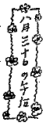

四月十五日
今晩は。
いま、夜の八時十分前。一九三六年四月十五日。慶応の病室。スエ子は緑郎の作曲が演奏される音楽会へ出かけてゆき、私ひとり室の隅の机に向って、これを書いて居ます。
ゆうべから、私はこの風変りな手紙を、これ迄いつも貴方へあげる手紙を書いていた時のような楽しんだ心持で書きはじめる仕事に着手しました。三月二十四日に予審が終った時、私は外に出たら何よりも先にあなたのところへ出かけてゆき、過去一年間の様々の経験の中から積み重ねた成長の花束を見せて上げたい、見て欲しいと思っていたのですが、公判がすまないうちは面会も手紙も許可されぬ由。其で、この何時お手元に届くか今のところ未だ見当のつかない手紙をこのようにポツポツと書きためることを思いついたのです。三月二十七日の夕方出て、すぐ慶応に入り、今日で十八日目。この二十五日に退院して林町に住みます。
――何から書こうかしら。二月二日、五日間帰宅を許されて帰っていた私が、黒い紋付を着て坐っている食堂の例のテーブルの傍で、咲枝が書いたハガキにより、貴方が私の健康につき最悪の場合さえ起り兼ねまじく御思いになったこと、後から林町のものたちへ下すったお手紙を見せて貰って承知いたしました。初めてお目にかかれる時、私はきっと「死にもしなかった！」と云って笑って貴方を眺めることであろう。そう思って居りました。今、私は決して急な危険など迫った状態ではありません。然し、これまで、考えて見ると、私はちっとも
（一）私が丸まっちい体をしているので心臓が疲れ易いということ。これは最も見易い常識。
（二）一昨年の一月から六月十三日に母の危篤により帰る迄の間に私は猛烈な心臓脚気にかかっていて、胸まで痺れ、
私の心臓が慢性的に弱ったのは、この第二のことからです。その時は、オリザニンの注射その他の治療で直そうとし、大して苦情なく暮すようになって、貴方に初めてお目にかかれた十二月初旬には、もう自分の体のことなどお話する必要なく感じて居たのでした。今度は淀橋にいた時から注意をそこに集めていましたが徐々に弱り、父の亡くなった前後、非常に不安定な状態になりました。本来はその時最も入院が必要でした。けれどもその都合にゆかず、予審が終ってから即ち目下養生をしているという次第です。お医者様は私の心臓について、極めて公平で自然な説明をされます。「これで持っている間持つでしょうとしか申上られませんね」と。至極尤もなので、私は笑い出し、心の中で、これでは貴方だってふーむと仰云るしか返事があるまいと、或ユーモアを感じるのです。全くそうらしいの。持つ迄持つということは、つまり私は生きていられるだけ生きていられるということで、私が持ち前のたっぷりや的生存を自信をもって或期間つづけ得ると云うことです。私の知識と意志で出来るだけ衛生に叶った生活法をやって行って、さて、主観的に自覚されない微妙な均衡の破れで、不意と私が生きつづけられなくなったとしたら、其はどうも困るわ、貴方には、御免下さい、と云うしかない。父と私との実に充実した情愛を包む各瞬間をして益
 光彩あり透明不壊であるように生きましょう。私は父との永訣によって心に与えられた悲しみを貫く歓喜の響の複雑さ、美しさに就て、文字で書きつくされないものを感じて居ります。其は音楽です。パセティークな、優しい、歴史性を確固としたがえた交響楽です。私は、本当に自分が芸術家として又一つ力強く人生に向いて背中を押し出されたような、新しい現実の面を我ものとしつつあることを感じて居るのです。このように私の経験。悲劇の発生を不可能ならしめる程充実した愛の高められた本質の美しさ。そういう人生の最も
光彩あり透明不壊であるように生きましょう。私は父との永訣によって心に与えられた悲しみを貫く歓喜の響の複雑さ、美しさに就て、文字で書きつくされないものを感じて居ります。其は音楽です。パセティークな、優しい、歴史性を確固としたがえた交響楽です。私は、本当に自分が芸術家として又一つ力強く人生に向いて背中を押し出されたような、新しい現実の面を我ものとしつつあることを感じて居るのです。このように私の経験。悲劇の発生を不可能ならしめる程充実した愛の高められた本質の美しさ。そういう人生の最も五月二十五日 〔市ヶ谷刑務所の顕治宛 本郷区駒込林町二一中條咲枝より［自注１］（正宗得三郎筆「四国風景」の絵はがき）〕
きょうは御病気の様子が少しはっきりわかったのでいくらか安心いたしました。
面会の節、つい申すのを忘れましたが生玉子は白味をのぞいて黄味だけ召上れ。それから夏ミカンをよくあがるように。トマトはまだでしょうか。おかゆのお弁当を一ヵ月つづけておきました。朝牛乳、玉子二つ、一つはナマ一つは半ジュク、御注文のとおりいたしました。本のこともすぐ計らいます。どうかくれぐれもお大切に。お元気なのは分って居りますが家のもの、友人たちは本当に心配して居ります。全体として体力を蓄積なさることが大切ですから、読書なども平常よりは用心してなさいますように。
皆からよろしく。きょうの太郎は眠くって失礼。でも思いがけなかったでしょう。
［自注１］中條咲枝より――発信人は咲枝となっているが、百合子が書いている。前年五月中旬検挙された百合子は、十月下旬治安維持法によって起訴され、市ヶ谷刑務所未決に収容された。一九三六年一月三十日、父中條精一郎が死去した。百合子は五日間仮出獄した。ふたたび市ヶ谷にかえり予審中、二・二六事件が起った。三月下旬、保釈となった。百合子は慶応病院に入院した。保釈の際、判事は二・二六による戒厳令下の事情によって百合子の公判が終了するまで顕治への面会通信は控えるようにといった。
六月二十六日 〔市ヶ谷刑務所の顕治宛 駒込林町より（封書）〕
二十六日の夜。九時 第一信［自注２］
今、二階の北の長四畳の勉強部屋でこれを書きはじめようとしていたら、太郎がアァアァアとかけ声をかけながら、一段ずつ階段を登って来て私の膝にのり、しばらく色鉛筆でモジャモジャとやってから、となりの広間の大きい写真の前へゆき、さかんに「おじいちゃまにこーんちヮ」をやっているところです。
二十四日には、本当に本当に久しぶりでした。あまりいろいろ激しい生活の変化がこの一ヵ年間に生じたので、かえって何も申せませんでした。私は慶応病院に三月下旬から一ヵ月入院していた間に、あとになってお目にかけようと思って、毎日暇なときにポツポツ手紙のようなものを書いたのですが、時がたつとそれもやっぱり手紙としての役に立たないことがわかりました。
とにかく、私の顔と声と眼の艶を御覧になり、あなたはきっと安心して下すっただろうと信じます。そしてわたし自身も深い安心を感じます。私は昔、あなたにユリはお嬢さんだから云々という言葉をいただいて以来、私のあらゆることであなたが心配して下さるということ――心配をあなたにかけなければならないものとしての自分を感じる必要のないものとして生きようとする習慣で暮していたし、あなたについても下らない心配は一切しない覚悟をきめていたので、私の体についても私が安心している間はあなたも安心していらっしゃるという風な感じかたでこの一ヵ年は暮したわけでした。でも私は変に気を
気分はやっぱりあなたらしくゆったりしていらっしゃるからほんとうにうれしく存じます。大事にして下さい。ごたごたいうに及ばないことは実によく分っているのですけれども。文学の仕事についても、生活法についても御安心下さい。私が最近に経た鍛錬は、一人の私のような生き方をしてきた作家には、十分の価値をもって摂取されるものですし、ずいぶん無駄なく勉強もしたし、着々と作品の計画もたてはじめて居ります。私はやっぱり生活を愛し、たくさん笑い、心の底に音楽を感じながら、例えば、きょうは暑くて苦しいから、勉強部屋の掃除をさっぱりして、裏庭から草花をとって来てそれをさし、フロをたきつけ、それを浴び、きのう下げてきたフトンの日によく乾したのをベッドに入れ、夕立が来た頃は爽やかな、うるおいのある心持で横になってちょっと休みました。それからついこの間六十八歳で立派な生涯を終ったクリムサムギンのおじいさん［自注４］のことについて少し勉強し、あしたの朝早起きするのを楽しみに、このお喋りを終ったら寝ます。だいたい健全なプログラムで毎日がすぎ、出来るだけ夜ふかしはしません。でもこの間、「わが父」を『中央公論』に書いたときは徹夜してしまいましたが。
きのう速達で手拭（一）、タオル（二）、下へはくもの（二）、単衣（一）、フロ敷（一）等お送りし、フトンは敷布を添えました。タオル二本のうち、私は薄手の方がさっぱりした使い心地だろうと思いますが、実際はどうかしら。薄いのがよかったらこの次はそれだけにいたしましょう。本は比較的軽いもの、だが面白そうなものを『日本経済年報21』とともに送りました。あなたの帯はもうぼろぼろになりましたろう？ はじめからあれはやすものだったですものね。この次の手紙のとき、そのしおたれ工合をお知らせ下さい。今年の夏、私はやはり東京を離れない予定です。何とかして、すこしはさっぱりした一夏を送らせてあげたいと思います。去年も一昨年もひどい夏でした［自注５］から。
父のことについて私は特別あなたにどう書いてよいかわからない。短い言葉で表現すれば父は父として最もよい生きかたをしたし、なくなりかたをしました。父と私との心持の相通じていた程度の濃やかさは御存知ですが、父は自分の死によってまで、かえって私たちに生活力をおこさせ、人生の正道を愛す心を深くさせる、そういう生活を営みました。よく世間では急な永訣のとき、虫が知らせるとか、或る徴候があるとかいうが、父と私との場合、ちっともそんなことはなかった。それはまことに愉快です。そんなこみ入った心霊的技巧がいらないほど、生命が終る途端まで互の結びつきは充実していて、云わば死んでも死なぬ有様なのだから。すべて充実したもの、生粋なるもの、自然力でもそういう発現をする場合、常にどっちかというと単純なような形であらわれ、しかも云いつくされぬ美にみちている。人間も、この美に精神を鼓舞されるには、出来あいの生きかたでは駄目であるから、私はつい自分を幸福な者の一人に数える次第です。こちらはまだ蚊帳はつりません。そちらは？ 太郎はこの頃ニャーニャという言葉を覚えました。ではおやすみなさい。又書きます。
［自注２］第一信――公判後、百合子からの第一信。
［自注３］心苦しく思います――一年二ヵ月ぶりに面会して、宮本への差入れ状態が非常にわるかったことがわかった。一月三十日に中條の父が死去したとき、顕治は弔電をうつ金さえもっていなかった。百合子が市ヶ谷の女囚の面会所で家のものに会うたびに、あっちは大丈夫かしら。ちゃんとしている？ ときいたとき、百合子のきいた返事は、いつも、ええ大丈夫。御安心なさい。ちゃんとしていてよ、という返事と笑顔だった。
しかし現実では、顕治は不如意のために疲労していた体の栄養補給ができず、結核を発病した。
［自注４］クリムサムギンのおじいさん――百合子はマクシム・ゴーリキーの伝記を書こうとしていた。
［自注５］去年も一昨年もひどい夏でした――一九三四年の夏は二人とも留置場生活中であった。一九三五年の夏はまた百合子が留置場生活であった。
［自注３］心苦しく思います――一年二ヵ月ぶりに面会して、宮本への差入れ状態が非常にわるかったことがわかった。一月三十日に中條の父が死去したとき、顕治は弔電をうつ金さえもっていなかった。百合子が市ヶ谷の女囚の面会所で家のものに会うたびに、あっちは大丈夫かしら。ちゃんとしている？ ときいたとき、百合子のきいた返事は、いつも、ええ大丈夫。御安心なさい。ちゃんとしていてよ、という返事と笑顔だった。
しかし現実では、顕治は不如意のために疲労していた体の栄養補給ができず、結核を発病した。
［自注４］クリムサムギンのおじいさん――百合子はマクシム・ゴーリキーの伝記を書こうとしていた。
［自注５］去年も一昨年もひどい夏でした――一九三四年の夏は二人とも留置場生活中であった。一九三五年の夏はまた百合子が留置場生活であった。
七月九日 〔市ヶ谷刑務所の顕治宛 駒込林町より（陳清※［＃「汾」の「刀」に代えて「一／刀」、60-15］筆「榕園」の絵はがき）〕
七月九日。きょうのおかゆはどうでしたろう？ かたくなかったかしら。どうか食欲をうまく保つよう御工夫下さい。スープは栄養よりもアッペタイトを刺戟するのでよいのだそうだけれども。ゆっくり手紙が書きたいけれども、私はまだ仕事が一しきり片づいていないので、このハガキで間に合わせます。テッちゃんが会いたがって、きょうも手紙をくれました。近々出かけます。お父さんの椅子も買いに出かけますが、一度島田へきいてあげましょう。坐椅子をかってあげたのでもしかしたら其によりかかっていらっしゃるのかもしれないから。この支那の人の絵の色彩、生活感、面白いでしょう。今の時候で見ると大変暑苦しいようであるがなかなか濃厚で面白い、但この作品で画家は極めて自然発生的に自身のもちものを出しているだけですが。今私はゴーリキイと知識人とのこと、又女のこと等面白い研究をかいています。
七月十六日 〔市ヶ谷刑務所の顕治宛 駒込林町より（封書）〕
七月十五日の夜。第二信。
毎日よく降りました。お体はいかがでしょうか。しめっぽくて、皮膚もさっぱりせず、心持おわるかったでしょう？ お風呂に入れないとその点こまります。アルコールを貰って水にわって体を拭くことは出来ないものでしょうか。
私は今月の初めからずっときのうまで非常に忙しく沢山勉強もしたし、自身で堪能するだけ書くものにしろ深めたものを書いたので、読んでいただけないのがまことに残念です。そのためについ手紙がおそくなった次第です。体も疲れると心臓が苦しいので氷嚢を当てますが、それ程疲れなければ平気であるし大体私は夏は精神活動も活溌だから、近々に又小さい家をもって、今度は誰か家のことをしてくれるひとを見つけて、単純に、しかも充実した美しい生活をやるつもりです。
今、国男たちが、階下の食堂で盛に家のプランについて喋っている声がする。この家は御承知の通りダラダラと大きくて生活に不便であるので、この連中は小ぢんまりとしたものをこしらえ直して暮そうという計画なのです。
私が病院から帰って来た時分、スエ子は是非私と住みたい心持で、私もそれはやむを得まいと思って居りましたが、この頃ではスエ子が自身の職業をもつ条件や何かでやっぱり国男たちと暮し、後には一本立ちになるプランに変更です。だから私は私で自分の一番よいと思う暮しかたをすればよくなったので大変楽です。去年の六月頃詩人［自注６］である良人に死別した女のひとで、おひささんというおとなしい人がいるのでもしかしたらそのひとに家のことを見て貰うかもしれません、それが好都合にゆけば私は殆ど幸福というに近い暮しが出来るのですが――私の条件としてはね。この頃私は仕事というか文学についての勉強心というか猛烈であって、女学生のようです。
さっき良吉さんが芝居につかうアコーディオン（手風琴の進化したもの）のことで急に来て、いろいろ話しました。面白い本を翻訳しました。小説ですが、活動の結果手も足も失い目さえ見えなくなった二十四歳の青年が、自分の文学でまだ役に立とうとして書いたものです。感動的なものです。その前にはスエ子の誕生祝に三越へ行って
 の歓迎との実写映画を見てまだ生きていたゴーリキイがスタンドで感動し涙をハンケチで拭いている情景を見ました。五十銭です。何というやすいことでしょう。きょう『日本経済年報24』を送ります。それから今にアルプスの雪景のドイツ版の写真帳を送ります。チンダルの『アルプス紀行』はもうおよみになりましたか。お気に入りましたか？ 私は写真で涼ましてあげたいと思うのです。この花の匂いは庭の白いくちなし。匂います？ 今晩封じこめておいてあしたの朝とり出して送るのですが。
の歓迎との実写映画を見てまだ生きていたゴーリキイがスタンドで感動し涙をハンケチで拭いている情景を見ました。五十銭です。何というやすいことでしょう。きょう『日本経済年報24』を送ります。それから今にアルプスの雪景のドイツ版の写真帳を送ります。チンダルの『アルプス紀行』はもうおよみになりましたか。お気に入りましたか？ 私は写真で涼ましてあげたいと思うのです。この花の匂いは庭の白いくちなし。匂います？ 今晩封じこめておいてあしたの朝とり出して送るのですが。第二信のうち。七月十六日の夜
きょうは何と暑かったでしょう。この頃熱はいかがな工合でしょうかしら。却って暑ければ暑いなりに気候が定った方がしのぎよいでしょう。今九時半頃。庭の樹の間に灯をつけ、提灯を下げ、スエ子が歌をうたっている。私は二階でこれを書いているのですが、きょうは珍しいことが二つあったのでこの付録を足すことになりました。太郎が生れてはじめて動物園にゆきました。そしてあざらしが大層気に入って、かわゆがったそうです。熊は遠いところから見るのだし、お猿はチョコマカしていやで、象は、こっちを向くと少しこわいのですって。あっちを向いていると安心でうれしがった由。私は太郎親子と一つ車で上野まで廻って其から、あなたのところへ出かけ、久しぶりでテッちゃんに会いました。髪がすっかりぬけて薄くなっているの。でも丈夫そうで澄んで大きいいい眼付をしていて、やっぱり何だか要領を得ずニコニコしている顔は雄弁に感情を語るのだが、口の方は一向駄目で、変に隅によっかかったような恰好をして、本当にあの人らしいと云ったら！ 大笑いです。私は二十三日にお目にかかりにゆきます。何か特別な支障のない限り。
［自注６］詩人――プロレタリア詩人、今野大力。『戦旗』とプロレタリア文化連盟関係の出版物編輯発行のために献身的な努力をした。共産党員。一九三二年の文化団体に対する弾圧当時、駒込署に検挙され、拷問のビンタのために中耳炎を起し危篤におちいった。のち、地下活動中過労のため結核になって中野療養所で死去した。百合子の「小祝の一家」壺井栄「廊下」等は今野大力の一家の生活から取材されている。
七月十九日 〔市ヶ谷刑務所の顕治宛 駒込林町より（封書）〕
七月十九日 日曜日 午後四時 第三信
二階に上って来て手摺から見下したら大きい青桐の木の下に数年前父が夕涼みのために買った竹の床机が出ていて、そこに太郎がおやつのビスケットをたべている。わきに国男が白い浴衣姿でしゃがんで、黒豆という名の黒い善良な犬が尻尾をふっている。太郎に私が上から「太郎ちゃん、ワンワンにおかし、はいって！」と云ったら、Ｓさんというスエ子の注射のために来ている看護婦が「おやりになってるもんだから味をしめて動かないんです」と笑っている。太郎は自分の手からビスケットをやってなめられて、アウとうなっている。「犬のよだれはきたなくないことよ、お兄様」「そうかい」そんな会話。日曜日らしいでしょう？
私はきょう下の食堂へ来ていたあなたからのお手紙を声を出して家じゅうのものによんできかせました。そして、どう？ 〓〓〓何て云いわけをして上げる？ ときつ問しました。というのは、私は家であなたが御心配下すったとは全く逆の位置にあるからです。真面目な話。私は大切にされているが、其はいろんな心配を相談出来るからというとり得のためなのです。そして私はもうこういう種類の心労は大変疲れたから、早く自分の単純で書生らしい生活に戻りたいと願っているところなの。
この前の手紙で申し上たような有様、更に現実はあれより複雑故、一番広い視野で先を見通すものが、こういう中では疲れ、そしてあるところでそのものとしての限度を見出し、それ以上の力こぶは入れても事情は改善されぬと見きわめないと徒らな精力を消耗するのです。叱れるうちはまだよいというのは本当の言葉よ。叱ったって仕方がない、わるいと云うのではないがどうも何とも仕様がない、そういうのは大変困るものです。そういう生活に対して或レン
 あなたの手紙は私を笑わせ、そして愛情のふかい怒った心持も起させ、ゲンコをその鼻先にこすりつけて上げたいと思わせます。おお。本当にぶって上げたい。
あなたの手紙は私を笑わせ、そして愛情のふかい怒った心持も起させ、ゲンコをその鼻先にこすりつけて上げたいと思わせます。おお。本当にぶって上げたい。坐布団は見つかりました。半ズボンは急に一つともかくお送りしました。きょうの夜夏のかけぶとんが出来るからお送りいたします。私はゴーリキイ研究を一冊にして出版することになったので八月中旬までそのために大勉強です。この仕事は一昨年の冬書いたバルザック研究等とまた違った意味でいかにも私らしいものであり、自身のためにも――作家的発展のためにも大変よいものです。『改造』八月に四十余枚書いたのはこれまでの研究――国際的な範囲で――が特にとりあげてはいない面――ああいう出身の一作家の発展とインテリゲンツィアとの相関関係を見きわめようとしたものであり、十分の自信があります。トルストイ、チェホフ、ツルゲーネフ等と婦人を描く点において彼はどう違ったかという点、それは『文学評論』に書き、彼の初期のロマンチシズムがもっていた歴史的意味については『文学案内』に。
私はゴーリキイをこのように愛し、食べ、学び、そして、アメリカ流に云えば through になってしまおうとしています。トルストイとも比べ、この二人からは何という滋養の吸いとれることでしょう。トルストイが若かったゴーリキイのことを、「頭はわからない。ひどく混雑している、が人間として非常に知慧がある、フム」と云ったことは興味あります。二人はなかなか噛みでがあります。
ゆうべは良さん、ター坊の親たち、重治さん、栄さん夫婦などと、どじょうのおつゆをたべて大変面白くいろいろ――アンデルセンの自伝のことその他を話しました。
きょうは、手紙をいただいて、笑い出しつつ握って振ったゲンコをこのような形にかえて御目にかけます。
七月二十三日 〔市ヶ谷刑務所の顕治宛 駒込林町より（有島生馬筆「ある種の肖像画」の絵はがき）〕
七月二十三日。きょうはお目にかかるつもりで出かけたところが、生憎加藤氏がお休みをおとりになっているので都合がつかず残念をいたしました。なかなか暑気が厳しいがいかがですか。
トマトはまだですか。
七月三十一日 〔市ヶ谷刑務所の顕治宛 駒込林町より（封書）〕
午後の六時前。食堂で。 第四信
この数日来の暑気の烈しさはどうでしょう！ 栄さんのところへのお手紙を見せて貰ったら、夏らしい気候になり、と書いてあったが、私はそういう余裕ある気分でこの暑さを感じることのできない心持でした。八年来の暑さだそうです。熱の工合はいかがですか。汗と盗汗との区別がおわかりになりますか？ 食欲はあるでしょうか。今年の夏は久しぶりで私が家にいるから何とかしてすこしあなたも
これは暑い、そう思い、そちらの様子を考えると暑さは又更に独特の汗を私にしぼらせます。この頃は暑さで夜中に目をさまし、又あまりよく眠れないくらいです。そちらではよくお眠れになりますか。少しは風通りはありますか。
うちの連中は暑さで閉口しながら元気で、太郎はこの頃小さい黒ん坊のように半裸で暮して居ります。大きい青桐の下に大タライを出してそこへゴムの
きのうは、繁治さん、栄さんや徳さんの奥さんなど皆で夕飯をたべました。徳さんもこの暑いのに可哀そうに［自注７］。
その前晩は、健坊［自注８］のところで珍しく夕飯をたべ、九時半頃になってそこらへ涼みに出ようと、これも栄さんを加え四人でぶらりと出たらどうも水の流れるのを見たくてたまらず、どっかへ行ってみようと私が云い出し、両国の河岸までのしてしまいました。何年ぶりかで夜の大河を眺め、なかなかいい気分でした。惜しいことに河岸でゆっくり腰かけやすむところがなくてね。どこかお台場かどこかへ小さい船の出る浮棧橋まで出てみたら、モーターボートが通ると波のうねりでその小さい四角な棧橋がプワープワーと揺れてね。丸まっちい私は平気なようなこわいようなの。鶴さんは例の「百日かずら」の頭を風にふかせ、竹の御愛用ステッキ（これは文壇漫画にもかかれます。体は細い、だがステッキの太さよ。という工合で）を顎の下に突いてしゃがんでいたが、やがてホラどうだねと立って左、右、左、右と脚をひろげて力を入れ、小さいフワフワ棧橋をなおゆすろうとするのです。ところが不覚にも、その棧橋の陸につないであるところに私と栄さんと合計三十何貫の重みがずっしりとかかっていることに心付かず、私が「十二貫じゃ無理よ、こっちはこの通りなんだからね、」と云ったのでナアーンダとあきらめ、いねちゃん、大笑い、帰りに盲滅法に歩いたら明治座の横のプラタナスの大変綺麗な並木のある新しい公園へ出て、震災後のこの辺の新鮮な風景を味いました。明治座八月興行の立看板が出ていて「彦六大いに笑う」三好十郎作、杉本良吉演出、井上正夫、水谷八重子、岡田嘉子などと出ていて、これも面白くみました。私は先日来、ゴーリキイの研究を本にするために大変勉強したので、一息いれるのと暑さにうだったのとで、この数日一寸のびました。（中休みです。書くのはこれから）
この前のお手紙で国府津へでもおいでと云って下さったけれども、あすこは夏はムンムンです。それに海へ入らないしね。去年、重治さん夫婦は富士見の高原へゆき、健坊たちは千葉の海岸へ行ったが、今年はどこもまだ釘づけです。資金思わしからずでね。
島田へは椅子をお送り申しました。お気に入って東京からよこしたといってはお見せになっている由。私も大変うれしい。それは折たたみ椅子でのばすと長椅子にして寝られ背の勾配も加減できるのです。
ところで、この手紙はきっと私がお目にかかる時分にやっと着くのでしょうが、シャツその他の衣類、フトンなどの工合はいかがでしょうかしら。間に合って居りましょうか。あなたはまだお湯をおつかいになれませんか？ 浴びるだけならいいのではないでしょうか。虫にくわれませんか。おや、今涼しい風が入って来た。こういう風をこの封筒に入れてちょっと吹かせてあげとうございます。二階は蒸風呂です。だもんで下にいて、
［自注７］徳さんもこの暑いのに可哀そうに――坂井徳三がプロレタリア文化運動のため検挙されて未決にいた。
［自注８］健坊――佐多稲子の長男健造。
［自注９］山崎さんの伯父上――顕治の母の兄。
［自注８］健坊――佐多稲子の長男健造。
［自注９］山崎さんの伯父上――顕治の母の兄。
八月九日 〔市ヶ谷刑務所の顕治宛 駒込林町より（封書）〕
八月三日、午後十一時頃、第五信
きょうは久しぶりの涼しい日でした。この二階はひどく西日がさして眩しいので、疲れてこまっているので、たまにこうして雨が降ると私はホッとして、ああたすかったと思います。同時にこの点でだけはすこしあなたの利害とちがっていると苦笑するの。きょうは眼鏡をとりかえることをやりました。慶応に入院していた間に眼の検査をしてもらったところ、私の眼は右と左とで大変度がちがっているので、今かけている眼鏡より度はちがえられないが、瞳孔距離がちがうというので処方を書いて貰っていた、それをやっとこのごろ、今日、なおしに出かけたのです。今までのフチを一まわり大きくして、レンズはツァイスのウロ・プンクタールというの。これは赤外線、紫外線を吸収して人工光線の下で仕事をするのに大変疲れないのだそうです。大奮発です。でも眼玉ですものね。そう云えば、私のこれを書いているテーブルの上には、馬の首のついた中学生じみた文鎮のわきに明視スタンドが立っているのです。そのことをまだ書きませんでしたね。そっちで『科学知識』をよんだらスタンドの科学的光度のことが書いてあって、明るく視るスタンドが科学的な計算によってつくられたというのを知りました。あの暗いところで、そういう知識を得ました。家へ帰って真先に買ったのはそれ。三段に光度が変えられ、柔かい光がいい心持です。こんどはそこへレンズがとび切りとなって、おお、おお、ね。私どんなに勉強しなければならないか！ ですね。この次お目にかかるとき、私は今日の世界の科学の最も新しい成果であるレンズをとおしてあなたを見るのですが、あなたはこの手紙をおよみになる迄気がおつきにならないでしょうね。あのところで、私たちには眼鏡のことまでを話しているひまがないもの。あなたは近眼におなりになりませんか。大切にして下さい。無理をなさらないように。スエ子も眼鏡をもっています。これは遠視。国男も。緑郎も近視。全くこれではベルリンの小学生ではないが、支那人と日本人の違いはどこで判るか？ ハイ日本人というものは眼鏡と写真機をもっています、ですね。
四日。火曜日、夜中の二時。
早寝をしているはずなのに、こんな時間に手紙を書いたのではすっかり馬脚をあらわしてしまいますね。しかし、今夜は眠る前ぜひ一筆かきたい。けさついた七月二十五日づけのお手紙のお礼を。
あれはまるであなたのごく近くに坐って話をしているような心持を私に起させました。あなたが健康について云っていらっしゃること、又差入れについて云っていらっしゃること、みんな私が心にもっていると全く同じ心持です。単にそう考えるのではなく、全身でそう感じているために、私たちの生活全面にわたっての明るさ、平静さ、確信がヴォルガのように豊かな力で張り切りながら流れてゆく、そういう工合です。私はよくわかっている。私たちの生活で何が大切か、私の勉強について差入れがその差しつかえとなるようなことを、あなたはちっとも希望していらっしゃらないのだし、そんなことを又私もするような小乗的態度ではない、なくてよいのであるということを。
詩人だったひとは、持病があったところへ肺病がだんだんわるくなって遂に生きられなかったのですが、動坂のおばさんだったひとやそのほかの友達たちが最後まで想像されないほどの親切をつくしました。死ぬ二、三日前に撮った写真では、タオル寝間着――黒の縞のところに赤っぽい縞が並んでついたの――を着て、『冬を越す蕾』を手にもっているところがとられていました。
国男連中は、まだラジオです。今頃がベルリンの午後三時四時です。オリムピックのドイツ語の放送が聞えてきています。一九四〇年に東京オリムピックが催される由、その賑やかさが今から思いやられます。武者小路、西條八十などスタディアムにいての通信をおくってよこしています。白鳥は夫婦で行っている。藤村は国際文化協会という役所から後援され、ペンクラブの大会へ（ヴェノスアイレス）出かけて居ります。昔、フランスへ茶の実をもって行ったように今度のおみやげも日本の植物の実と柿本人麿の和歌です。横光利一はパリにいて、一九二九年以来の花の散ったパリ［自注10］を見てつまらないと感じている由、面白いものね。見る人のこころごころの秋の月かなの感ありです。藤村と云えば、私は読書生活中に漱石をよみ直し、いろいろ興味ある発見をして居ります。小説を書いたら、次には漱石、鴎外、藤村の極めて作家的、人間的突こみをやってみたいと虎視タンタンよ。鴎外のロマンチシズム、その中挫、ゲーテ的なものの空想と現実との
五日、午後三時。
食堂の湿度計をみると、針はずっと中心によっている。やっぱり暑くてもさっぱりしている日は違うね、そんなことを話しながら、さて机をどっちにうつしたものかと考え、とうとうベッドを置いた八畳の方へ長四畳から出て来てしまいました。二階は概してあつい。特に四畳は西日がさすので。ここは庭を見下し、青桐の梢に向い、いくらか増しです。ピアノの音がしている。緑郎はゴーゴリの「検察官」を組曲に（パロディー風に）つくるプランをたて、しきりに思案中です。私はきのう、おとといでシャパロフ［自注12］をよみかえしたのですが、ゴーリキイより三つ年下のこのひとの経験はいろいろ比べて面白い。なかに、シベリアにはチェレムーシャという
一つの家でも食堂九〇度、この机のところは九四度。
昨夜は若い友人を渋谷の第一高等学校の近くへ訪ねてゆき、珍しいものを見ました。Ｙ・Ｓの家ですが、昔の土蔵づくりの武者窓つきの全く大名門です。その門の翼がパァラーで主人Ｓの話し声がし、右手ではＫ女史のア、ア、ア、ア、という発声練習が響いているという工合。家全体は異様に大時代で、目を
ＳＵが新交響楽団のキカン誌『フィルハーモニー』の編輯の仕事に入りたい希望でいることは、この前の手紙で申しあげましたね。今月の二十日頃採否がきまります。いずれにせよ、この家には住まないことになりました。ＫＵが私がいないではＳＵと住むことを我慢しきれないというの。ＳＵの方でも。――ケンカ別れをしてしまうより別々に暮そうということになったのです。二人ながら生活においては未熟練で、感情的で、互に「他人よりわるい」場合が頻出するのですね。私は太郎の遊んでいる姿を眺め、この可愛い小僧の精神の中に、どれ丈この生温い、受身な、姑息な生活気分を打開する力がこもっているかと思います。そしてどうかこの小僧が成長する時代が活溌であって、おのずからいきいきとした雰囲気に呼吸して育つようであったらと希望します。私たちの家の三代の間の歴史は実に興味があります。この面白さは文字でしか描写できぬものです。
私の家はそろそろさがして貰うことにしました。どこに住んでよいかよく分らないけれど早稲田南町辺はどうかしらなど考えて居ります。戸塚へも近いし。市外はおやめです。夜などの出入りに淋しくて困るから。
この手紙はいろいろ盛り合わせになりました。
お体の様子は又くわしくお知らせ下さい。
附録、 千葉県の保田に一ヵ年契約で月六円の家があり、いねちゃんの子供らのために共同でかりました。学校の休のうちに子供らは出かけます。私は毎日大勉強で、本を運ぶのが面倒故、一かた今の仕事が片づいてから。七十銭位の本になります［自注13］。大変面白い文化年表をつけます。前例のない試みですが、有益です。
［自注10］花の散ったパリ――一九二九年のアメリカの恐慌の影響をうけたパリの生活。
［自注11］二年間位の仕事――「伸子」の続篇が計画されていたが実現しなかった。
［自注12］シャパロフ――シャパロフ著『マルクス主義への道』。
［自注13］七十銭位の本になります――ゴーリキー伝のこと。健康悪化してこの伝記は未完のまま終っている。
［自注11］二年間位の仕事――「伸子」の続篇が計画されていたが実現しなかった。
［自注12］シャパロフ――シャパロフ著『マルクス主義への道』。
［自注13］七十銭位の本になります――ゴーリキー伝のこと。健康悪化してこの伝記は未完のまま終っている。
八月十日 〔市ヶ谷刑務所の顕治宛 駒込林町より（正宗得三郎筆「干潮」の絵はがき）〕
八月十日午後五時半。夕立があがって心持よい夕方。蝉がオーシイツクツク、オシオスと鳴いています。御気分はいかがですか。私は毎日十枚位ずつ書いて居ります。二日ばかり前、十二銭貼った手紙を出しましたが御覧になりましたかしら。きょう此をかくのは、さっき雨上りの庭へ出て見たら離れの庭に白藤の花が今頃咲き出したのを見つけうれしさに興奮しました。貴方は、私達の祝いに貰った大きい白藤の花の鉢を、二階の廊下においていたことを覚えていらっしゃいますか？ その白藤が今年はじめて時おくれの花をつけたのです。私はうれしくてこのハガキをかきます。
八月十八日夕 〔市ヶ谷刑務所の顕治宛 駒込林町より（封書）〕
八月十六日（第六信）
夜中。時間がよく分らない。
私の例の時計は、このごろよく居睡りをしますので。――
こんなにおそく話をするのは、この頃私は実に実に勉強をしていて、今五十枚ばかりペシコフ爺さん［自注14］の少年時代について書き終り、まだ興奮がさめず、何か書きたいからです。
たあ坊・健造たちは保田の月六円の家へ両親とゆきました。太郎は咲枝ちゃんと安積。スエ子はこの三日間ばかり信州八ヶ嶽の麓の小海線という高原列車の沿線へ行き美しく日にやけてかえりました。私は家でギューギュー。そして、貴方にきょう「
もう涼風が立ってからこのようなものを送るのを御免なさい。私も秋になってからもし事情が許したら少し休養して来るつもりだから。二人のところに、今年の夏の休暇は時おくれなのです。
お体は朝夕しのぎよくなりましたか？ 食欲はお出になりますか。あしたあたりお手紙が来るのではないかと思います。十八日にはお目にかかりにゆくつもりですが。――私は、今の本みたいなものは一生一冊だから本当に熱心にやって居ります。深い洞察、愛のこもった分析、公平な作家的批判、その全幅を傾けて居り愉快です。木星社から出た本［自注15］が三版目になりこの秋か冬出ます。後書を発展的な見地に立って私が自身の名でかくつもりです。私はもうその位の経験は
十八日の午後二時。
あれからかえって来て、急に夏フトンをほして、ボタンをつけて、今江井が又のっけて中川へ届けに出かけたところです。
夏ぶとんがあの暑い最中になかったというのは実にお気の毒様でした。私は前に手紙で伺ったとき、御返事がなかったからそちらにあるものと考え、栄さんも在ると云ったので、わざわざ縫ったのに入れなかったのです。本当にこういうゆき違いは些細なことであるが私としては大変あとの心持にのこります。暑いね、今日は。そう云う、そして、お湯がもうお浴びになれるのかしらんと考える。そういう風に心持が動いている。暑い。暑い。だが自分としてはさっぱりした花でも机の上に置いてウンウンとやっているのが結局一等心持がよい。そういう感情の状態だから夏ぶどんの行違いには閉口してしまいました。マア、でもいいわ。それに、今年の冬こそあんな足の先の出るようなのではない夜具をさしあげます。あなたの体に、あの変に小さいおしるしのような被物がのっかっていたのかと考えると滑稽で腹立たしい。
家の者のいろいろの近況を申しましょう。スエ子はこの十九日頃職業がきまるか駄目になるかの境で、気を張って居ります。どうもあやしいらしい。慶応を出た人で、編集事ムをやっている人のスイセンしている者があるので。
江井は御承知のとおり永年働いていて家族八人故このひとの身の振方については随分心配いたしました。国男には父のような月給が払えぬから。それで江井も大いに頭をしぼり、向島の西村の土地のがら空きのところへアパートを建てることになり、それで江井の安定の手段とすることになりました。私はやっと肩の重荷をおろしました。何しろ、こういう話、スエ子の話、皆、百合子様、お姉様なのです。この数ヵ月は珍しい方面での心労をいたしました。俊造はこの秋学校をどうやら出てどこかの製作所に入ります。家も冬までには建て直して小ぢんまり、文化的にする由［自注16］。国男夫婦は家が直ると心持（生活の）まで変ることを大変たのみにして、何でもすべていいことは家が直ってからという期待につながれて居ります。この心理は面白いのです。私も激励して笑い乍ら「居は心をうつすそうだからね」と云って居ります。そしたら国男もしっかり勉強するのだそうです。
私の弟妹たちは一風も二風も
太郎は今安積で、日にやけ、田舎の子と遊んで居る由、結構です。土のこわいようなものが出来上っては仕方がありませんから。少しはよその子とケンカして泣くのもよいでしょう。「ああお坊ちゃま
島田の方では、達治さんの除隊が一番たのしみでいらっしゃいます。
これは、私達二人の楽しみで、まだ島田へは申さないのですが（実現しないとすまないから）達治さんがお嫁を貰うとあのお家では狭いの。お風呂場のところをね、改造してお父上のゆっくり寝ていらっしゃる小部屋にし、風呂は台所の左手（井戸の奥）へもって行ったらどうでしょう？
六畳か八畳のさっぱりした部屋をこしらえて上げたいと思います。私はそのことを、なかにいて考えたのでした。あんまり早く達治さんが御婚礼してしまうと困るが、来年の中頃以後であったら何とかなりそうで楽しみです。家のプラン想像なさることが出来るでしょう？
二階は達治さん達。今の下の部屋が隆治さん。その奥へお二人というわけなのです。ずっと戸外が見えるよう冬でも外景の見えるようガラスをよく利用してね。楽しい想像でしょう？ 私は私式の粘りでこの小さいが愉快な空想を実現するつもりです。どんなにおよろこびになって下さるでしょうか。大変嬉しい計画［自注17］です。木星社の本のこと、このこと、二つの楽しいことです。秋になれば、あなたのお体も少しはよくなるでしょうし。
九月十日に「どん底」や「エゴール・ブルィチョフ」の記念の講演会の予定があり、私の校正も一通り終ったら或は安積へゆくかもしれません。只景色のいいところにいるだけなら二三日でよいが、安積は久しぶりでいろいろ面白いかとも思うので。
きょうは暑いが乾いている。机の上にコスモスの花があって非常に初秋めいた美しさです。スエ子の注射のための看護婦のひと（私も慶応で世話になり、父の最後も世話してくれたひと）が、私がよく仕事をするからと御褒美によく花をいけかえてくれるのです。あなたのところの蘭はまだ活々として居りましょうか。白藤の花は三房あります。ではまた。
付録（一枚）
きょうもお話の間にいろいろ私の生活について心配して頂いていることをありがたく存じました。でも、普通な意味で心配していただくには及ばないのです。その点私達は大層幸福者であります。私はやっぱりどこまでも私ですから。あなたは百合はお嬢さんだが、云々と云って安心していらしったその安心をずっともっていて下さってちっとも間違いでないし見当ちがいでもないのです。私は自分がそういう点安心しているのにあなたが心にかけていらっしゃるのかと思うと、逆に何だかこうして説明しなければならないような気になります。
これはおかしいことです。
［自注14］ペシコフ爺さん――マクシム・ゴーリキーのこと。ゴーリキーと書くと消された。
［自注15］木星社から出た本――宮本顕治『文芸評論』。
［自注16］家も冬までには建て直して小ぢんまり、文化的にする由――住宅の改造その他すべては空想におわった。
［自注17］大変嬉しい計画――親孝行の計画も財政不如意で今日まで実現していない。
［自注15］木星社から出た本――宮本顕治『文芸評論』。
［自注16］家も冬までには建て直して小ぢんまり、文化的にする由――住宅の改造その他すべては空想におわった。
［自注17］大変嬉しい計画――親孝行の計画も財政不如意で今日まで実現していない。
八月二十日 〔市ヶ谷刑務所の顕治宛 駒込林町より（スキーの絵はがき）〕
八月二十日。今日「夜明け前」の後篇とロンドンの「ホワイト・フアング」の訳とドーデエの「ジャック」を入れます。「白い牙」は昔枯川の訳があったが、お読みになりましたろうか。しかし心持のよいものだからもう一度でもよいでしょう。ヴォルフの写真集はお手に入りましたか。ヴォルフが細君などの入ったものをとり、集団の美を把えぬところは一つの特長ですね。しかしライカカメラの技術としては最高の由。今夜は鈴子さんが国へかえるので戸塚の夜店を歩き鈴虫を買ってかえったところ、今もって鳴かぬ、雄ではないのだろう雌だろう。そういうことなら口惜しいけれど可哀そうだから捨てない。そんな話をして、私がこれは随筆になると云ったらスエ子曰ク「吉屋さんものね」。お体をお大切に。夜具はいかがでしょうか。
今やっと鈴虫が鳴きはじめました。野生な声でケチくさくて可愛らしい。今、私が机に向って坐っている。スエ子がわきへ小さい椅子をもって来ていろいろ話して居ります。
八月二十七日 〔市ヶ谷刑務所の顕治宛 駒込林町より（封書）〕
八月十八日夕方から。第七信。
この紙は、型が小さくてぽっこり四角くなって何だか窮屈めいて居りますね。大きい紙にたっぷり大きく書いた字。それはきっと御覧になって心持がよいだろうと思いますが、書くとついこまかくなる、段々こまかく粒々になってとけ込んで行くような工合になる、面白いものです。時々は字をかかないで音でたよりをあげたい位です。貴方が音譜をおよみにならないのは、何と残念でしょう。
あなたの窓から見えるものは何でしょう、空、電信柱、雀、樹の梢、それから何でしょう？ 花はあるかしら。この頃きっと随分空を御覧になるでしょう。空は時々海に似て、よく眺め入ると体が浮いてしまうでしょう？ 流れてゆくでしょう？ 私はこの感じはよく知って居ります。だが果してそれだけの面積が見えるか？ 安積の夕焼空の色彩の燃える美しさは驚くばかりです。太郎はどんな風にあの夕焼空の下をヨタヨタ歩いているでしょうか。
十九日の昼。
机に向っている。うしろから涼風が入って来る。仕事にとりかかる一寸前。昨夜鶴さんが保田からかえって来て、すっかり皮膚をやいて皮をはがしてかえって来ました。「
緑郎が今軽井沢の演奏会からかえって来ました。外国のひとが主に聴いたが、リズムのはっきりしたものが外国人には分ると云っていた、これは面白い点ですね。机の上には寒暖計があり。只今八十度強です。私は仕事部屋に、寒暖計だの湿度計だの磁石だのよく切れるハサミ、ナイフだの欲しい。今は寒暖計だけ。こういう程度に直接生活的な器は何だか生活慾を刺戟していい心持です。ところが時計はチクタクの大きく聴えるのなど大きらいです。あの夏になると眠りがちな時計を目立たぬところへ置いて安心しているから可笑しい。でも（エジソンでも時計はきらいでしたそうですからね）仕事の速度というか、進み工合というか、そういうものが結局二十四時間を計っているのだから。
コスモスの
この頃の小説の題は皆一凝りも二凝りもこって居ます。高見順の「起承転々」「見たざま」村山知義の「獣神」、高見順は説話体というものの親玉なり。それから「物慾」とか「情慾」とかそういう傾向の。高見順という作家は「毅然たる荒廃」を主張しているそうですが、バーや女給やデカダンスの中では毅然たるものが発生しにくいし他に生活はないし、背骨が立たぬから説話体をこね上げたらし。解子さんなどこういう才能の
二十二日の夜中。
雨が降っている。疲れて、しかし十分働いた満足の感じ。汗が体に
これを書いて感じたことですが、私はこれまでの――昨年五月十日迄の手紙では、こういう風に私の生活、仕事の中からの直接の響きのままの手紙を書きませんでしたね。手紙として整理して書いて居りましたね。おや、どこかでボーが鳴っている。
――○――
二十三日、日曜日です。
ロンドンのローヤル・ソサエティー・オヴ・ブリティッシュ・アカデミーから、父の閲歴について問い合わせが来て、それに答える下書を国男が書き二階の私のところへ持って来た。父の生れた年は明治元年（一八六八）でペシコフと同年でした。只一八六八でいいか、Ａ・Ｄと加えるかというので大笑いをやって父の仕事のリストのところへ来ると、私は何か一種の興奮を感じました。父は沢山の仕事をして居ります。いろいろ。実に沢山の建物をのこしている。子供達に対して御承知の通りのひとであった父がこれ丈の業績を蓄積している。そのことが私を深く感動させます。父は仕事を愛していた。よく食堂のテーブルのところで方眼紙（？）のノートを出していろいろプランを描いて居りました。尤も父の持っていたスタイルは私の好みとは大変異っていましたが。そして、私にのこされた愛情のこもった遺物［自注18］は、私の家を建ててくれると云ってよろこんで楽しそうに十ばかりのいろんな小さい家のプランを書いた二枚のホーガン紙です。一番気に入っていたのに赤インクで（１）とノートがあり、そこには私の部屋のほかにもう一つの部屋があって、スペーア・ルーム or・ｍと書いてあります。私は自分があすこにいた時又父がなくなったとき、そういう家が実際に建ったりしないで何とよかったろうかと思いました。（プランは昨年五月より少し前に描いたのです）私は自分の体を入れておく場所については、最も単純なのを好くようになりました。元からそうであったが猶そうなったから。いろいろの思い出、伝記、保存しなければならぬ責任、そういうものを欲しません。
（同じ夜）
私は或一人の作家の生涯について二百五十枚ばかりの勉強をするのだと思っていたところ、単に伝記を書く以上の収穫が、現在あることをつよくはっきり感じ出しました。何かが私の内部で芽をふくらしい。そういう予感。
二十七日の午後。
さあ、きょうはこれを書いてこの手紙は出すことに致しましょう。きのうはゴーゴリの「タラスブリバ」の試写を見て面白かったし又いろいろの感想もありました。国男は安積へゆき、家は至ってしずかになりました。家へかえってからはじめて音のない生活です。大変楽です。頭がよく働く。（今短い感想を書いたところ）鶴さん夫婦は日にやけていずれもまっくろです。私はその傍にゆくと心持がわるいほど白い。きょうも毛布のことが電話で通じられました。すぐ送ります。私は大変お手紙を楽しみにして、着くのを待って居ります。
［自注18］愛情のこもった遺物――建築家であった百合子の父は一九三五年ごろ、百合子の住む家の設計図をいくとおりも作った。百合子にも住む家ぐらい何とかしてやりたい、と。百合子は、それが実現するとは思わず、またそれを維持してゆく経済条件がないから、家をつくることを希望していなかった。しかし、そのプランのどれにも、父は顕治が使うための室を割りあてていた。いつも、二人が住む家として考えていた。家は、実現しなかった。
八月二十九日 〔市ヶ谷刑務所の顕治宛 駒込林町より（十国峠（１）、熱海峠（２）の絵はがき）〕
八月二十九日 土曜日。
きょうはスエ子、緑郎、
八月三十日午後 〔市ヶ谷刑務所の顕治宛 駒込林町より（封書）〕
第九信。八月二十七日の夜から。
きょうは体によくない天候でしたが御気分はいかがだったでしょう。皮膚がひやっとしていて汗がじっとり出る。今も出ている。八十度一寸出ています。月夜だったが今は霧が漂っている。湿気が多いのですね。『二葉亭全集』をよんだら扉に「ロシア文学は意識的に人生を描いている。それが日本の文学と違う」と書いてあった、鉛筆で。昔あの本をあなたは古本でお買いになったのかしら。十九世紀のシムボリストのところ（別な本）を見たらカントの哲学との関係についてノートがあって面白い。いろいろ面白い。万年筆でひかれてある条の傍に更に点をうってゆくようなこともあります。そういうときは大変に又面白い。（もう眠ろうとしてメガネをはずしたのに、フトこの紙が目に入ったので一言お
二十九日の午後。
暑い日光が青葉青葉にさしてすこし錆びた緑金色の輝が庭に一杯になっている。アルプスの山の中の羊飼の男のヨーデルの合唱が聴え、日本の豆腐屋のラッパの声がそれに混っている。私は何を別に話すというのではなく、貴方に呼びかけている。それは、呼びかけるということが、実に沢山の、云いつくされない沢山の感情と感覚との圧縮的表現だから。感覚的な、感覚が話す話はなかなか字に出来にくいものですね。――芸術家というものがこの感覚的なものによって生き、人生をさぐり、そのものの内容をより豊富にしてゆく過程は面白い。
本当に打ちこんで勉強し、ものを書いてゆく快よさを、本当に感覚的に知っているものこそ、真の作家になり得る可能性をもっていると思います。ジイドは、ロマン・ロランとともに外国の作家としてはいつか勉強したいが「贋金つくりの日記」の中に感情と情熱との相異について書いている。その相異を知らぬものが、人生から感得するものは、いかに貧弱であるかということを云っている。私はこの三四年作家として猛烈にそのことを感じ、二三の場合、話したこともあったがわかるものがなかった。さすがジイドである。そうでしょう？ あなたはこのことは分っていらっしゃる。けれども、私がハッとそのことを思う折々にすぐ、傍を向いて、「ね、こうでしょう？ だから！」ということは出来ない、残念であるが。二人分を感じて、私の心は
抽象的なことを喋って御免なさい。でも時々はこれもいるのです。私の精神衛生の見地からね。（笑い声は小説家が苦心するところです、今も困ったわ。私は笑っているのだが――）ああ、私共は、沢山沢山感じて生きているのだからね。
――○――
この頃沢山読む本は、いつか前に書いたときつかったもので紙がはさんである。もう古びて。こんどは、又この次の便利のために、必要なところには昔の人のはり紙のように紙を貼って見出しを書いて居ります。一目瞭然で大変によろしい。その紙の切ったのを沢山こしらえて、一つの小さい箱に入れておいてある。その箱はパリで、母が誰かのおみやげにやると云って買ったのの残りで、本当はマッチの飾箱なのです。金色のレースが張ってあって、細い色リボンの花飾りがついていて、ローマッチをこするザラザラがある。ロココまがいのけちくさいもの。その中から紙片を出して本に貼る。
ガラスの角ばったペン皿のとなりに置いて。ペン皿には御存知の赤い丸い球のクリーム入れがあって、太郎が二階へ来ると、私はいそいでそれをかくすの。握ったら可愛がってはなさないのです。ところがおばちゃんにしろ、これをどっかへころがされては一大事とばかり、太郎と同じように眼玉をギラギラさせるの。可笑しいでしょう？ きょう千田さんから電話、うちの小さい子供が話をするというので私の話、「ああもしもし、きこえる？ 私はね、まだあなたにあったことはないけれどね、あなたが生れるときリンゴの煮たのを母さんにあげたことがあるのよ。こんど会いましょうね」
太郎はまだ後輩故卓上を握ってア、ア、というだけ。
きのう二百哩ばかりドライヴをした、いろいろの話を書くのが順のようだけれども、きょうはあなたが八月二十二日に書いて下すった手紙が朝食堂のテーブルの上にのっていたので、先ずそのお礼を申します。

きょういただいたお手紙はいろいろの意味で、美しさに満ちて感じられました。だからこうしてこの日のまわりには花飾りがつけられたのです。ヘーゲルの話は大変面白く思いました。何故なら私はこの手紙の二十九日の分で書いているように、ヘーゲルが筋の立った理屈にまとめて考えていることを全身全心で感覚し、その中心情熱によって、さまざまの感情を高き低き生活の峰々として統一して押しすすめているのだから。
私は本当に他出という表現で云われている、それよりもっと生々しい緊密さ、謂わばこっちが風邪をひけばそっちも風邪をひく位の肉体的な感じで感覚している。何のために生きているかということが、はっきりしているからこそ、私は主観的には
生彩を放つところの、動く生命力の発露として、苦痛をも亦愛し得るだけ生活的です。私があなたにあげる手紙の中で、我々の生活には何が一番大切かということに触れて書くとき私はその答えが分らなくて書くのではないのですよ、答えはわかって居て、心に響となって鳴っていて、何とも黙しかねて、字にまで溢れるという工合なの。あなたが、そういうことにもふれて、きょうのような手紙を下さるのも私には大変にうれしい。私の生活について書いて下さることは勿論必要なものとして摂取されずにいるわけはないのですものね。私は愚劣なものの中からさえ役に立つものがあれば何か役に立つものを見出そうとする位、よくばりなのだから。まして。まして。恐らくあなたは御自分の字、字そのものよ、までが私にどの位必要なものであるかきっと御存知ないでしょう。
恐ろしい、動きのとれない現実はないと仰云るのは本当です。私だって、それは知るようになったし、云わば一人の人間が自分だけ動きがとれない心持でいるのに、客観的な現実はどしどし推移してゆくところに、現実――生活の力強い波動があるとさえ云えるのだから。只どうぞ、「失うものは借金ばかり」とおえばりにならないで下さい（ホホー。）
私は今特にどの点について「事情を改善することにつかれた」心持を書いたか覚えて居りませんが、経済的なことではないのよ。私自身にしろあなたひとりは威張らしておいてあげられない位「失うものは借金」の組ですからね。何がこの人生において合理的な生きかたであるかというようなことを心持の上でわからせて戸主気質から少しでも解放してやりたいこと。妹に真の自立性というものを教えて、勝気のために却って歪む自尊心の負傷を少くしてやりたいこと。咲が自分の亭主に対してもう少し正しい健康な意味での影響をもつように、そうしてよいものだと確信するように。それらのことは、私が家を別にして生活すると出来難いからいるうちに改善してやりたいと考えた、そのことであったろうと思います。疲れたというのは、自分たちが腹からそういう要求をもっていないから、皆敬意と一つのチェホフ的
ほんとねえ、そうしたらどんなにいいだろう！
と深く呼吸をするが、実際の生活はその古い道を流れている。食うに困らぬこと、即ち生活にこまらぬことと思っている。そんなような気がしているらしい。その中で改良に疲れたと云ったのでしょうと思います。
国など「姉さんがいなくなったら僕も大変だ、よっぽどしっかりしないとダラクするね」と云ってはいるが。何か反歴史的な執着などから経済的にもその他にもごたついてはいないのです。どうかそのことは御安心下さい。悪いものではない。だがどうも困る。そういう存在を今のような歴史は沢山に包括して居りますからね。
私の手紙が第五信までついて居る由。ところで私の今書いているのには第九信と番号が打ってある。十二銭の切手を貼ったのを御覧になりましたか？ すると私は一つ自分の番号をとばしてしまったのかしら。或は今のが第八信に当るのかしら。とにかくこの頃はウンウンでね。偉大な価値の評価が正当にされるようにされないということ、それが私の努力の動因です。単にまつり上げるのでなくて、一箇の芸術家は自分の才能をどのように生かして来たかどんな力ととり組み自身の矛盾ととりくんで来たかというその突き入るような分析、綜合、生きた人その人がそれをよんでああ自分は斯うであったかと三歎するようなもの、そういうものをつくる決心で私はとりかかって居ります。半分ばかり終りました。書きながら私自身の生長も自覚されるような、そういうものを書いて居ります。よろこんでいただけるだろうとたのしみです。
きのう十国峠で採って来た秋の花をお目にかけたいけれど、せっかく花を入れてあげてそれがなくなってしまって居たりすると惜しいからおやめにいたします。押して色をうつしてあげるにはあまり鮮やかに咲いていて可哀そうなの。
私はこれから髪を洗います。そしてさっぱりして仕事をします。きのうはお暑かったでしょう。きょうはからりとしていて
九月七日 〔市ヶ谷刑務所の顕治宛 駒込林町より（封書）〕
第十信 八月三十日から。
この頃私はこの手紙が日記のようなものですね。又くつろいだお喋り。親密な会話。頭の中でつきつめたことの独白――もう一人の自分に向っての。そういう風ね。私は自分の全生活の波、色、響をあなたのところへ一つものこさずつたえて、それでくるんであげたい。むきになって仕事をしているときのつめよせた調子までも。一貫した生活のトーンで、私の生活の波長をはっきりお感じになるというのは、私にもわかる。そして、私は、はっきりそのことを感じてもいるのです。私の生活の響が応えられていることを。
さあ、本当にこうしていないで髪を洗わなければ。さっきの手紙を封をしてまだテーブルの上におき、私はもう次のたよりの冒頭をかいているのです。
九月七日
一週間とんでしまいました。あなたは二十九日には手紙を書いて下さいませんでしたか？ 日曜日（六日）には大変待っていたのだが。――私は今病気なの、珍しく。変に黒い突出たような眼玉をして。三十一日の朝（この前の手紙をあげた翌日）起きるのが苦しかった。無理をして約束の築地の稽古場へゆき一時間半ほど熱心に話をしてくたびれてかえったら悪寒がして熱が四十度ばかり出ました。夜中だったがお医者を呼んだら喉が少し赤いというのでルゴールでやいてね、冷やしたり、おなかをあっためたりそんなことをして、どう原因があるということもはっきりせず今日やっと平熱になりました。
眠って、眠って、眠って、まるでそういう病気のようでした。きょうは眠くないの。皆心配してくれ、稲ちゃんは私が仕事をしすぎているから断然当分呑気に休まなければいけないという主張です。本当にそうするかもしれません。これがなおって起きて歩けるようになったら全く仕事をしないなどということは出来ないから、仕事を持ってでも栄さんとどっかの温泉へでもゆきたいと思って居ります。こんなにへばったのは何年にもないことでした。四月に慶応に入院していた時より弱った。まだ臥床。おカユ。食欲が出ないでいけません。私はどんなに参ってもすぐ食欲は恢復したのに、
あなたの方の御工合はいかがですか。すこしはましになりましたか？ 私は病気になったりしたのを恥しく思う心持があります。勿論過労からであったにしろ。やっぱり自分の健康の事情を十分理解しないで熱中したりした思慮の不足がある。
久しく途切れたからこれを書き今日はこの位でもう出します。この頃は時候がわるいらしいから呉々お大事に。こんな空を見て
九月七日 〔市ヶ谷刑務所の顕治宛 駒込林町より（山下新太郎筆「東山と萩」の絵はがき）〕
九月七日夜。今夜八日ぶりでお湯をつかい、お茶をのみに食堂へ来てこれを書きます。私の体、御心配をかけましたが、単純な疲労が重ってひどくこの残暑でやられたらしいのです。ひどく汗が出て出て、皆に、お前がたこんなに汗が出るかと訊いていたうちに疲れを重ねて居たのだったらしい様子です。御飯もきょうからたべます。背中の痛いのもすこしましになりました。栄さんがよく来て電気をかけてくれます。きょうは稲ちゃんも見舞いに来てくれ、ゆっくり休むよう呉々も云ってくれました。どうかそちらでもお大切に。
このエハガキはもう四、五年以前のもののようです。二科や院展がはじまったから新しいエハガキを御覧にいれましょう。南画会が小室翠雲と関西派との衝突で解散した由。残暑をお大切に。本当にお大切に。
九月十一日 〔市ヶ谷刑務所の顕治宛 駒込林町より（青鉛筆書き 封書）〕
九月十一日 第十一信
きょうはひどく風が吹くので暑さが乾いて吹きとばされて居りますね。ペンで書くと抵抗があってくたびれるので一寸このような鉛筆。
私の体は七日の夜（ハガキを書いた晩）から二三日又一寸後戻りをして熱は出ませんが食事がちゃんとゆかず、まだブラブラです。自分の思っていたより疲れていたと見えます。しかし、もうこの順で段々よくなりますからどうぞ御安心下さい。ことしはあなたにもなかなか大変な夏でしたでしょう。残暑になってから却ってよくないのね。弱っていらっしゃいませんか。
私は努力して頭の中をカラにしてボンヤリしようとして居ります。
二階で臥ている。時々下へ降りる。そして、太郎とお喋りを致します。
太郎はこの頃ハッパ、アーチャン。イヤダイヤダ。その他喋り、こちらの云うことはもう物語がわかります。家はこの頃病人続出でね、スエ子は大腸カタルがひどくなりかけて目下慶応入院中です。然しずっと経過はよくて、発病後一週間ばかりですが、却って私を追いこし、もう外出出来るしすぐ退院いたします。私も、もう数日後には面会に出かけます。本当に御心配下さらないように。小さい声で白状すればね、あなたがどこかへお行きと書いて下すった時分、どこかへ行っておけば今へばらなかったのでした。でも、私は、「七、八月は東京に居りません」というマンネリズムが我まん出来なかったのでね。御心配をかけて御免下さい。
シャツ上下薄手のをお送りします。『破戒』は絶版で古本をさがします。近々シンクレアの『ジャングル』を入れます。
九月十三日 〔市ヶ谷刑務所の顕治宛 駒込林町より（封書）〕
第十二信 九月十三日 日曜日午後
ああ、あしたは日曜日であると思う。そして、今朝、起きるとすぐ食堂へ下りて行って来信のところを見る。無い。これはどういうことであろう？ 二週間何も書かれないということは？ そう考え、顔を洗いながら私が病気をするような気候故、そちらも大変工合がわるくていらっしゃるのではないだろうか、このごろは残暑が苦しい、中川へ養生書の注文をなすったそうであるから。――いろいろと考える。或は又自動車で動くようなことがあって、それが障ったのではあるまいかなど。明日面会に行こう！ そう思いつつこの手紙を書いて居ります。
私の健康はやっと起きるようになりました。もう殆ど一日中起きて居り、仕事をする気力も段々もりかえしました。熱は出ません。いろんなひとがいろいろの一身上のことについて相談に来る。それをやっぱり加減がよくなくても聞く。そしてそれぞれの意見を云う。――面白いもので、この頃のような時季には、いろんなひとが一身上のことで問題をおこして居ります。仕事を本気にやっているときは勿体ないからね、時間が。――でも勿論疲れるようなことは致しませんから御安心下さい。
きのうは、思いがけずてっちゃんがやって来てね、夕方まで愉快にいろいろ喋りました。話していたとおり帰ってあけの日に来たのです。お土産に『柿本人麿』という本と、森
今、スエ子が慶応から退院してかえって来ました。赤痢の疑いとイ者は云ったが、実はそうでなかったのですって。糖尿が悪化すると下痢をつづけてそのまま昏睡してしまいになることがあり、万一スエ子がその初りでは大変ということであったのだそうです。いい塩梅に糖も減っている由です。つやつやして、よく眠った顔をして「お姉様どうした？」と入って来た。これで一〔中欠〕
この間あなたが書いていらしたように全く生活のための健康であるということを深く会得しているから、自分のことについても、あなたのことについても、出来得る最上をつくしつつ心痛はしないでいるのですが、気になる。気にかかる。これはやむを得ないことです。そして、ああ私は決して病気などするようであってはならないと思うのです。一層つよく。生活のための健康なのだからね。二人の生活のための。私は目下温泉保養の決心をして、やすくて閑静なところを調査中です。栄さんとゆくために。私が書いている評伝の後に興味ある文化年表をつけます。そちらの方を受持っていてくれるので、共通の仕事もあるから。三週間位の予定です。多分信州の
九月十三日 〔市ヶ谷刑務所の顕治宛 駒込林町より（はがき）〕
今日の午後手紙を書いて、夜テーブルの横を見たら一枚私の字の書いてある紙がおっこちている、何だろうと思って見ると、手紙の中の一枚が何のはずみか落ちていたのに心づかなかったのでした。変な手紙をおうけとりになることになるでしょう。その頁で私はあなたのお体のことを主として伺っていたのだのに。――どうぞ右の次第御承知下さい。注意が散漫になっているのではないから。
九月二十四日 〔市ヶ谷刑務所の顕治宛 駒込林町より（鍋井克之筆「榛名湖」の絵はがき）〕
九月二十四日夕方五時。
今、『東日』の月評をかき終り「地獄のカマのふたがあいた、あいた」と御機嫌のところです。私は短い時間に、沢山の雑誌をよむこと、つまらない小説をよむことがきらいでしかたがないが、とにかくがんばってまとめてうれしい。明日お目にかかりにゆくのですが、一筆。これは今の二科に出て居る絵です。
十月三日 〔市ヶ谷刑務所の顕治宛 長野県下高井郡上林温泉せきや方より（地獄谷の写真の絵はがき）〕
十月三日。一日に仕事が終らず、二日に出発。上野から長野まで汽車。長野から湯田中まで電鉄。その後自動車でのぼり二十分ばかり来ると、桜並木のところに、店頭にお菓子を並べてタバコの赤いかんばんが出ている、そこがせきやです。部屋からは、その桜並木、むこうの杉山、目の前には杉、桜、楓など。お湯はおだやかな性質で、よくあたたまります。ウスイのとんねるを知らないほど眠って来てしまいました。空気がよくて鼻の穴がひろがるよう。二つの部屋に栄さん、私とかまえて居ります。今日も雨です。
栄さんがお湯で、アラ、と云って立ってゆくから、ナニときいたら青い雨蛙が青い葉の上で動いたのでびっくりした由。二人ともあんまり口もきかず、のびるだけ神経をのばして居ります。
いねちゃんが上野まで送ってくれました。汽車がカーブにかかるまで赤いジャケツが見えました。
昨夜は何時に眠ったとお思いになりますか？ 六時半よ。そしてけさ、六時半。納豆、野菜など、なかなか美味です。きょうテーブルをこしらえて貰います。
十月十一日 〔市ヶ谷刑務所の顕治宛 長野県上林温泉より（せきや旅館前の桜花の絵はがき）〕
十月十一日、日曜日、晴。
十月三日づけのお手紙を昨日いただきました。私の生活のうまいやりかたについて考えて下さり、本当にありがとう。この頃私は痛切に考えていたことでしたから。ゆっくり手紙を書きますが、とりあえず。林町では国男が盲腸でケイオウに入院し、一時間半かかる手術をしましたそうです。イマそのハガキを見ました。そのゴタゴタもあって、咲枝はあなたにさし上げる夜具をまちがえて送ってしまいましたが、あとでとりかえますから、
シャツ、薄いもの上下、まだ届きませんかしら。冬のはまだ早いと思い、毛の薄いのを入れましたが。
これが私のいるせきやさんの一家です。左手の障子がその家。もっとも十年ほど前の様子ですが。この桜並木はよく、皆の顔の向きに山々の眺望があります。お大切に。
〔欄外に〕本のことはよく分りました。こんどは忘れっこなし。
十月十一日 〔市ヶ谷刑務所の顕治宛 長野県上林温泉より（上林温泉から渋温泉を望む風景の絵はがき）〕
十月十一日、日曜日、きょうの午後、この宿の裏の方に新しく建った二階の方へ移り、やっと落付きました。十日ばかり、ほとんど毎日野天で昼間は暮らし、大分日にやけ、足が達者になりました。スキーで有名な志賀高原へ一昨日行きました。新しいドライヴ・ウエイを二十分ばかりのぼると杉、松、栗、柏などの見事な喬木の森がつきて白樺、つつじ、笹などの高原植物になります。石ころ道の旧道を、冬ごもりの仕度に竹、木材、柴など背負い、馬につんだ農夫がうちつれだって下ってゆきます。高原の頂に国際観光ホテル建造中です。
この川が流れて千曲川に合します。この手前にやや濃い山の左手に長野がある。更に左手のこのハガキからはずれたところに雪をいただいた日本アルプス（北）が見えます。落日を受けて美しいのはこの遠くかすんだ山々です。田は収穫時です。お湯は一日一度です。どうぞ御安心下さい。
〔欄外に〕夜も早ねをして居ります。
十月十二日 〔市ヶ谷刑務所の顕治宛 長野県上林温泉より（川中島方面の写真の絵はがき）〕
十月十二日、小雨ふったり、やんだり。きょうは山の中から出かけて、二人は毛襦子の大コウモリをつき、善光寺見物です。善光寺下という電鉄の駅でおりたら陸続として黄色の花飾りを胸につけた善男善女が参詣を終ってやって来る。四十以上の善女が多い。今は付近の小管という家で名物のおそばをたべようというところです。寺はつまらぬ。長野という町は山々を背に何となく明るい雰囲気をもって居ます。山々の中腹に白く
ソバは変にニチャニチャして、ちっともおいしくありませんでした。手打ちソバなどたべさせぬひどいもの也。
十月十二日 〔市ヶ谷刑務所の顕治宛 長野県上林温泉より（封書）〕
十月十二日（月） 第十六信
九月三日に下さったお手紙は十日につきました。あなたが、私について、一層生活の達人になるようはげまして下さること、本当にありがとう。そのことは、近来自分でも益
はっきり感じて居ることでした。何故なら一昨年の六月以後去年の五月までの間に一昨年の九月頃まで体が悪くていたにもかかわらず、一冊の『冬を越す蕾』がまとまるだけの仕事をしました。今年にして見ても四月以後今日までに私の体の事情に合わせれば、相当の勤勉さです。時間のつかいかたをもっと巧みにすることと、それは私を徹夜から防ぐためにどうしても必要です。全く私は変なウシミツ時にあなたに喋りかけては、計らずしっぽを出してしまいますものね。（でも私は小さいしっぽであろうが、大きいしっぽであろうが、あなたにはお目にかけずにいられないのだから、どうぞあしからず）私は年に一つは本の出来るだけに働くプランです。今年は或は暮れに近づいて二冊出るかもしれません。評伝と別に白揚社が感想集を出すと云っているから。――
ところで、ここでの生活ぶりについて何と書きましょう。――私としては珍しい表現でしょう？ つまりこれは、落付こうと努力しつつ落付けずにいるということになると思います。
ここの自然は実によくて、或はそのために落付けないのかしらとも考えます。きのう迄は部屋の都合で落付けなかった。丁度山々では
十六日にお目にかかったら、途端にああ、休まったと感じるだろうと思っておかしい。ホウ、ユリのバカ。
でも、日にやけたし、体がしまったし、脚は丈夫になったし、決して効果なしではありません。その点は御安心下さい。おかしいでしょう？ だから主観的な私の心持の複雑な交錯にかかわらず、生理的な条件はよくなっていること確かです。きょうの手紙は永く書いても同じ。これでおしまい。
十月十四日夜 〔市ヶ谷刑務所の顕治宛 長野県上林温泉より（中沢弘光筆「北信濃風景」の絵はがき）〕
このエハガキに描かれているところは今は一面の段々の田で、稲が実り、背景の濃い杉山とつよい色調のコントラストです。多分この左手の方に一米十円をかけたという一万メートルの志賀高原へのドライヴ・ウエイが通って居ると思います。雪は上林で三四尺の由。志賀の上では七尺だそうです。冬の健康法を私は、雪の中で頬っぺたを赤くしてやりたいと思う。ポコポコしたところへ逃げずに、ね。
中沢さんの絵では雪のブリリアントなところが出て居ません。ここに水上泰生（水彩画家）の別荘あり。
東京からスキーヤーが来るとき、土地の農民は山案内をしたり、千本で一円の箸を内職したりします。竹カゴもあむ。
十月十四日 〔市ヶ谷刑務所の顕治宛 長野県上林温泉より（長野市風景の絵はがき）〕
十月十四日の夜。あした一寸東京へかえるために栄さんとカバンつめを終ったところです。この間書いた手紙で、私はここに落付けず閉口しているところを書きました。けれども健康のためにもう少し居る方がよいし、きょうは十日間の収穫として短いこの生活のスケッチなど『サンデー毎日』に書き、段々調子がついて来るらしい。二十日頃にかえってずっと仕事をします。いかにもここの空気が気に入っていて（本当の空気です）、何だかまだしんにのこったかすまでがさっぱりしない心持ですから。これは変な字ですね。スエ子の万年ペンが出て来たので、それでかいている。長野市は中央がずっと傾斜をもった町で、横通りを見るといつも山が見え一種の情趣はもって居ます。
十月二十一日 〔市ヶ谷刑務所の顕治宛 駒込林町より（中村不折筆「芦の湖」の絵はがき）〕
十月二十一日。
きょうは雨つづきの後の晴天で、珍しく川口さん夫妻が小さい娘の
おなかの工合はいかがですか。一口にたっぷり口に入れてゆっくりかむことは大変よいそうです。〔約五字抹消〕もそのようにかむ。ゆっくり昨夜話し、いろいろ愉快でした。「批評は現在体で書かれた歴史である」という言葉をキイノートとしている由。
十月二十七日 〔市ヶ谷刑務所の顕治宛 駒込林町より（封書）〕
第十七信。
十月二十七日（火）ひどい風。
きょうあたりお手紙が着くかと思っていたがまだ着かない。待っていず、書いて、出してしまいましょう。先週の火曜日には、いろいろのエハガキをなるたけ沢山御覧になったらと思い、わざと私の手紙は書かなかったから。――
お体はいかがでしょう。中川へ夜着のことで電話をかけたら、まだやっぱりそちらのおカユのようですね。あなたはリンゴをたべていらっしゃるでしょうか。
私の体はこの間又ケイオーで診て貰いました。ラッセルはもうすっかりなくなっています。御安心下さい。オリザニンをのみ、過労せねばよい由。過労をしないということは、仕事をよく配分することであるから、私はそのことを心がけて、仕事は十分、多量にして居ります。一月号の『中央公論』に小説をかくので、上林へかえることは中止しました。本をよんでする仕事と小説とは全く違った雰囲気を要求するのでね。然し、上林へ行ったことは、あれだけ外気の中で山を歩いたことは実にきき目があり、体にも気分にも大変のプラスでした。ちがった場所での生活の観察もよく、私は「上林からの手紙」というのと「
林町の例の二階の机に向って、計画中です。
国男の体は大分回復して来ました。でもまだ疲労熱を出す。十一月の初旬には退院しますでしょう。スエ子の盲腸は糖尿で切開が望ましくないから、何だかまだおなかが堅いと蒼い顔してフラフラです。太郎は益
愛らしい。可愛い可愛い小僧です。私の住むところ、国府津を思いついて下さいましたが、私はもうあすこには住めないと思う。父と最後に行って、父のかけた椅子を見ると苦しい。寝室も陰気さの方が勝っている。勉強机など父の趣味で買ってくれたのが置いてあり、やはりそれも苦しい。私は感覚的に肉体的に父を感じているのに、物があってしかも父はいないという感じばかりはっきり迫って来るところは、さすがのおユリも閉口よ。面白いでしょう。これはスエ子も全く同じ心持です。国、咲はちがうの。平気です。彼等はあすこで自分達の生活をやったからでしょう。それに家の前は八間のコンクリートの国道であり、後方には東海道本線が走り、クラウゼ的な丘陵で、落付けません。道ばたのあの
では又。あしたあたりお手紙が来るかしら。
十一月四日 〔市ヶ谷刑務所の顕治宛 駒込林町より（封書）〕
十一月四日 ひどい南風。第十八信。
その後盲腸の工合はいかがでしょう。夜眠れないほどお痛みになったとは想像も出来ませんでした。ひやした丈でどうやら納まったのならまアよいが。
十月は大体盲腸やチブスの季節である由。しかし、若し手術がいる場合、そちらではどうなさるのでしょう？ どうかお大切に。この間のお手紙をよんで、面会のとき、それでは苦しくていらしたろうし、又却って歩いたり立っていたりなすった丈本当の意味ではマイナスになったのだったと残念でした。国男はやっときのう退院してかえりました。まだつとめには出ません。
この前の私の手紙もう御覧になりましたろうか。もう上林へは戻らぬことお分りでしょうか。『中央公論』の一月に小説をかきます。だから、山の中にいたのでは駄目故ずっとこちらに居り、仕事がすんだら又一寸空気を吸いにゆくかもしれません。今頃ポツポツ私たちが上林や善光寺から書いたエハガキなど届き、私が上林へ又かえろうなどと云っている手紙がお手に入っているのでしょうね。可笑しいこと。
きのう鶴さんのところでお手紙拝見しました。稲ちゃんが、「あの着物を私達が入れたと思ってお礼を云われて、わるくってしようがない！」とくりかえし笑いながら云っていた。縫うことと小包にすることを私が留守なのでたのんだのでした。「でも、好意ということでは同じだからいいさ」と私も笑ったの。本（蘭学事始）は、たしかに二人からの御誕生の祝です。鶴さんは大変体が参って居ります。そしてこの人は科学的には治療出来ないの、私は心配して居ます。彼は生きなければなりません。その重要さがはたしてどの位わかっているかしら、よくそう思う。
この間島田へ上林からお送りしたのは松葉の茶です。今度は少し沢山、野原の方と両方へお送りいたしました。いつぞやお話のあった毛布ね。あれはことしのお歳暮にさし上げましょう。私も少しは稿料も入るし。「阿Ｑ正伝」の作者魯迅が没しました。写真の顔は芸術家らしくなかなか立派なところがあります。支那のゴーリキイといわれた由。この頃、パアル・バックというアメリカ人の女作家（支那生れ）のひとの「母」「大地」など支那を描いた作品をよみました。芸術の現実によって中国のしんの姿をつかむことの困難さが其々に感じられます。
作家としての発展の段階は生涯のうちに幾つ自覚されるものであるか、それは人によって、又その人の
そのプロテストが又いろいろの事情によって三四年前とは全く異り、手がこんでいてひねくれていて、はっきり自明なことではイヤイヤをするというのだから、相当なものです。いろいろ勉強と努力と成長とがいります。
近日中に又面会に参ります。今夜はピヤチゴルスキーというセロの名手をききます。久しぶりで。パストゥル（科学者）の一生が映画化されて来て居ります。これも見たいと思う。お体のことは本当にあなたの御用心を願うことしかありません。
附
私の体のことをこの前の手紙に比較的くわしく申しましたから、きっともう安心していて下さることと存じます。
改めて、もう一度。ラッセルはもうすっかり消えました。過労のための一時的なことでした。心臓は特別の新しい徴候なし。過労するな、過労するなが信条ですが、過労せぬということは仕事をよく塩梅することなのだから 着々とやるだけはやって居ります。
今は風邪で ズコズコですが、これは大したものではありません。どうか御安心下さい。
十一月十一日 〔市ヶ谷刑務所の顕治宛 駒込林町より（封書）〕
十一月十一日 水 第十九信 曇天
午後二時外苑で三万人の学生や青年団が音楽祭をやって君ガ代をうたっている ラジオ。
きのうは、先月のときから見ると、やっとあなたらしいお顔つきでした。窓があいて、一寸のり出すようになさったとき、少しよくなっていらっしゃるのを感じました。それにしても、先月は苦しかったのですね。よっぽど立っているのが無理であったに違いない。どうか、これからは、きのうお話のように少し無理そうなときはわざわざ出て来ないで会えるようにして下さい。その方が私はずっとずっと安心なのだから。
けさ十一月二日づけのお手紙をありがとう。書く日がずっていることを知らず、二三日随分待って居りました。私の仕事のこと、又療養のこと。こまごまとありがとう。具体的にたのまれなければインスピレーションを実現しないとお笑いになったって？ なかなか辛辣ね。ひどい！ と思いながら思わず私もニヤリとしてしまいましたが。作品によって過去の作品を克服してゆくということは、全くです。私は、評伝風なものとしては夏からかかっているのをすっかり完成させたら、漱石その他にはすぐかからず、来年は主としてずっと長篇にかかります。作品そのもので、題材と主題との関係で今私がとりあげたく思っている諸点、芸術化されるべきであると思っている諸世相を書いてゆくつもりです。大変たのしみであるし、きっとあなたによろこんでいただけるものがかけそうです。丁度お産をする母が肉体的に出産を予感するようなもので、私の内部的カラクリは丁度もう作品をかくとき、或ゆとりと或客観力と経験の蓄積をもって来ている。この感じは、何と説明しましょう。実に何か内部的な一つの世界の前に扉があきかかっているのを見ているような、独得の感じです。へとへとにならず着実にやってゆきます。少し力をこめた作品をかく心持は本当に自分が生むもので又同時にうまれるもののような快い苦痛がある。只今は構成です。一月にはほんの六七十枚ですが、コンポジションは全篇の大体をこしらえておく必要があるので。
本を（医療の）そちらで買って下すったのは結構でした。お金がもうあんまりおありにならないでしょうね。でも来月までは
国男の体のことよろしくお礼を云ってくれとのことです。例によって筆不精ですからね。五日に退院し、まだ家にブラブラしている。国府津へでも行こうかなど云っている。盲腸は普通の三倍の大さがあった由。又、とったあとから生えるかもしれぬ由。そういう体質があるのですって。咲枝は疲れが出て、背中をいたがり、おふろのとき、私がサロメチールを背中じゅうにフーフーいってぬってやります。太郎はこの頃はダッチャン（父さん）、アアチャン、オバチャン、みんないるので大満悦です。かぜもひかず、くるくるして片言を云っている。汽車の絵をかかせるのですが、何故だか、チッチャポッポが大好きです。スエ子は盲腸がどうやらおさまり。鵠沼の方にさむしくないところを一部屋かりて、当分暮すでしょう。この家も一月末にはとりこわしがはじまりますから。私は十二月中旬に引越しの予定です。年の暮は、私たちの家でお客をよんでやります。私は私たちの家なしでは暮せぬ。来年はうんと能率的でしょう、それがたのしみ。
昨日御注文のアンダアシャツ早速はからいます。毛糸の寒中用のももひきジャケツは、今年御新調です。柔く軽いが、これまでのものより上等です。今栄さんが編んでいます。夜着はお気に入りましたか？ 割合心持よい色の工合でしょう。
この間は田村俊子さん、重治さん、間宮さんたちと、稲ちゃんのところで御馳走になり、愉快に一夜を過しました。池田さんは今苦しいの、わかれ話が起って、もつれていて。勉強はそれでもやっている。お体全体どうかお大切に。歯も。然し、もしかすると、一番わるい峠はお越しになったのではないでしょうか。来年には或安定が生じるのだろうという気がします。よい仕事が出来るようにおまじないをして下さい。では又。
十一月十四日 〔市ヶ谷刑務所の顕治宛 駒込林町より（朝井閑右衛門筆「丘の上」の絵はがき）〕
十一月十四日。毎日仕事の下拵えのために没頭して居ります。この頃健康改造のために注射をはじめ、すこしよいようです。今年の冬は、なるたけ火鉢を入れず、よく日に当りという方向で注意するつもりです。道具立てなかなか面白し（仕事の）いろいろの絵の展覧会がありますが、ひまがなくて。つい時間がおしくて。今竹内栖鳳やその他無カンサ組の文展招待展というのも別コにあって、殆どどれがどれやら素人に分らない位です。招待展評に曰く「文展の瘤展」「愚作堂に満つ」云々。この絵が大臣賞を貰っているのは大変面白いことです。これは普通の落選もある文展の方です。又散歩に出たらエハガキを買って来てお目にかけましょう。
十一月二十二日 〔市ヶ谷刑務所の顕治宛 駒込林町より（封書）〕
十一月二十二日 第二十信。
そちらからのお手紙を待っていたことや、小野さんが急逝されたこと［自注19］やで、この手紙はいつも書く筈の時より大変におくれました。
その後、お体はいかがですか。ずっと順に恢復をつづけていらっしゃいますか。この間面会のときお話のあった毛糸の足袋下をお送りしたら、もうかえって来ました。領置には出来なかったのでしたろうか。十二月に入ってから又お送りして見ましょう。それからかけ蒲団のあつさはいかがです？ やっぱり薄いとお感じでしょうか。夜着の上からでしたらあれでよいのではないかとも思うが。――
本は注文なすった分がありましたろうか。
鑑子さんの旦那さまは一昨二十日払暁没しました。足かけ三年の病臥の後です。二十日に重治さんから教えられて、咲枝、稲ちゃんと三人で出かけ（大森）夜十二時頃かえるつもりで行ったのですが、いかにもかえりかねてお通夜をしました。知義さん、須山さん［自注20］、大月さん［自注21］等肖像をかきました。二十五日に築地で劇団葬［自注22］にきまりました。小山内薫以来のことです。鑑子さんは実にこれ迄努力をして来て、これからもしっかりやってゆくでしょうが、私はこの二三年の間に両親をそれぞれ特別な事情の下で失って、感銘深いものがありますが、しかし、良人を失ったということは、その悲しみの性質において全く別のものであることを痛感しました。全く別のもの、全くその感覚においてちがうことである。死んで貰っては困る。実にそう思う。心と体とが、そう叫ぶようでした。暮している場所や事情やそれはどうでも、生きていること、そのことは絶対の価値をもっている。元より複雑ないろいろのことをふくめてのことですが。
もうじき父の一周年になります（一月三十日）。母の本はあのようにしてつくられたので、父の記念出版をしたいが、それには様々の困難があり、こまっていたら国民美術協会で大河内正敏氏や石井柏亭その他の人が一冊の『中條精一郎』という本を出して下さる由。私は大変うれしゅうございます。家族で出すよりずっとうれしい。それで一昨日、一昨々日は、「父の手帖」という文章を一寸かき、その前には又もう一つの別のをかき、更に十二月十日頃までにもう一つ二つ短い文章をかく予定です。スエ子も咲も国もそれぞれに書きます。御目にかけられるのが楽しみです。
スエ子は昨日から鵠沼へ住みました。小さい離れが小料理やの裏にあり、私がもと（四五年前）仕事部屋にしていたところ。半年ほど東京と半々に暮すそうです。太郎は相変らず。
私の仕事はプランが大きいので手間がかかりました。そろそろかきはじめます。自分で何だかこれまでとは違う心持が内部にしているのは興味があります。思いがけず助けてくれることが出来るひとがあって、第一部の下拵えはまことに好都合でした。体もお通夜できょうは背中が痛いが、大体は順調ですから御安心下さい。この二階から紅葉した楓の梢が見られます。上林辺はきっともう雪でしょう。きょう毛のシャツ、下シャツ等をお送りいたします。呉々もお大切に。十二月の十日頃にお目にかかります。かぜをお引きにならないように。では又ね。
［自注19］小野さんが急逝されたこと――音楽家関鑑子の良人、新協劇団演出家小野宮吉、数年来の腎臓結核によって死去した。
［自注20］須山さん――須山計一。
［自注21］大月さん――大月源二。
［自注22］劇団葬――新協劇団葬。
［自注20］須山さん――須山計一。
［自注21］大月さん――大月源二。
［自注22］劇団葬――新協劇団葬。
十一月二十六日 〔市ヶ谷刑務所の顕治宛 駒込林町より（封書）〕
十一月二十六日 第二十一信
けさ、十一月十六日づけのお手紙が届きました。その前のは二日の日付けであるから、間の週にはよそへおかきになったわけでした。大体そのことは分っているのに、何だか毎週待つから可笑しい。あなたのお体のことは、勿論絶えず念頭にありますが、私は決してくよくよ案じては居りません。そのことは、呉々御安心下さい。自然の治癒力について私は自分の経験から或理解をもって居りますし、あなたという方をも亦更によく理解して居りますから。根本的には安心立命して居ります。それから私の体のことを、この間うちはとやかく御心配かけ、すみませんでした。目下好調子です。小説も、今回分は僅かでも大体の通ったプランを立てなければならず、そのために時間を多く費しましたが、やっとそれが終り、書きはじめました。「乳房」のときより進んだ心の状態にあります。大変すなおに、描く対象を浮彫りにしてゆけそうな心持です。或自然な、柔軟な突こみがされそうな感じで、大変、大変うれしい。満を持し、いそがず迫ってゆく、この感じ。今度の仕事の準備中ふと「戦争と平和」をよみかえしました。もと一度、或ところは二度三度よんでいるが、今度よんで見て、ずっと異った専門的技術上の発見があって、これもためになります。描く対象は元より全く違っても、小説というものを書く上では学ぶべき点あり。「夜明け前」で学ぶべきは、仰云るように、作者の根気、努力、であるが、こちらの作者のスケールと現実洞察の、彼なりの鋭さ、リアリティーは実に光彩陸離たるものがあります。若い時代が、その技術をくみとりつつ、内容に於て新たな世界を芸術化し得るというよろこび、我から我に与える鼓舞には一寸云いつくせぬものがあります。描こうとする世界への没頭というか献身というか。しかも最も冷静な見とおしと統制。芸術的感興というものがこのように全心的な燃焼を要求するからこそ、芸術家にとっては、いかに生きるかというところまでが問題になって来る。興味あることです。私は決して夜更けの仕事がすきではないから、この点も改めて御安心いただきます。きっと眼が丈夫でないからだろうが、私はひる間の書きものが一番好きであるし、そのように整理してやって居ます。ほんとに、時間は悠久であるが、ですね。でも、私のように欲ばると、いろいろへまをやって、どうやらこの頃は、時間というもののほとんど驚くべき性質＝同じ三時間のつかいようで、生涯の仕事としての何かが加えられたり、全く空に消えたりすることの驚くべき性質を実感してつかむことが出来るようになりましたから、きっと追々あなたもマアよいと お思いになるようになるでしょう。でも、仕事の上での欲ばりというものはよいものです。欲ばってのことなら、たとえへまをやってもきっと、何か得て立ち直りますからね。ほんの一寸した経験でも。時間を充実させる術をしっかり身につけたら、もうその人は人生の達人と云うべきでしょう。私なんか、まだ、どっちかというと、平凡に忙しがっている平凡な欲ばりやの程度かもしれません。島田のこと。あなたのお考えになるその通りを私も考えて居ります。私は自分の両親に対して今日、ああしておけばよかったと思うようなことは一つもありません。島田のお二人に対しても私の希望していることはそのことですから。古典について評論家がなくて、辛うじての時評家が多いことについての感想。同感です。英樹さんに対して私が点がカライのはその
〔欄外に〕○毛糸の足袋下はハイラないのでしょうか。去年はそっちではいていらしたのでしたが、いらないのではないのでしょう？
○毛糸のシャツ、白メリヤスの下シャツをお送りいたしました。
〔「戦争と平和」を読んだという項の上欄に〕○これは特別な勉強よみで、作品のコンストラクションの解剖を、ノートしつつよんでゆく方法です。
漱石でさえ、交響楽は書けなかった、交響楽を書きたいと思う。
十二月五日 〔市ヶ谷刑務所の顕治宛 駒込林町より（封書）〕
十二月五日 午後 第二十二信
あなたはベッドの上で手紙をおかきになる［自注23］とき、どんな恰好をしておかきになりますか。あまり工合がよくないものですね。今私はこの手紙を、二階の部屋のベッドに仰向きになって背中の方へクッションをつめて、板に紙をのっけてかいているのですが。そして、こんな形で手紙をかかなければならないことについて、小さくなっています。二日の夜、夕飯後、急におなかが苦しくなって、咲枝は経験者だもので、早速盲腸と診断し、お医者を呼び、冷やし、それでも盲腸としては大分軽い方です。この頃ずっと仕事に熱中しているから養生生活であったのに、何と可笑しいでしょう。一身同体という証拠ででもあるのでしょうか。手術はせず、内科的になおしますが、いろいろ面倒くさい。流動物ばかりです。私の位でも苦しいことは相当であったから、あなたはさぞお
この間丸善で毛布の二枚つづきのをそれぞれ光井と島田とにお送りしておきました。達治さんも十一月三十日には除隊になったでしょうから、島田もさぞおよろこびでしょう。
あなたの冬用の厚ぼったいドテラが今縫いあがりました。フランネルじゅばんと入れます。どうかそのおつもりで、不用の
さむくなりましたが、今年は去年より概して暖いのではないかしら。きょうなどなかなかおだやかな日です。
盲腸など大変きらいです。少しひまなとき、そして健康状態のいいとき、切ってとってしまって置こうかと思います。こんなアナーキーな突発的な虫を体に入れておくことは何とも承知出来ない。いろいろ条件がわるく重なったとき、又きっとやるのだから。近日又ゆっくり常態で書きますが、今日は文字通り同病の
［自注23］ベッドの上で手紙をおかきになる――病監には机がなく、ベッドの蒲団の上で手紙を書いていた。
十二月十二日 〔市ヶ谷刑務所の顕治宛 駒込林町より（封書）〕
十二月十二日 第二十二信
十一月三十日づけのお手紙を十日の朝いただきました。このお手紙ではまだ私の盲腸のことを御存知ない。お体の方は順でしょうか。第一に、私は六日頃からベッドとデスクと四尺ばかりのところを動いて仕事をはじめ、十一日の朝終りました。あなたが手紙で、もう今頃は一区切りがついてよろこんでいるだろうと仰云ったのは一日だけ早かったわけでした。盲腸は軽くて今もうおかゆですが、冷やした結果、肝臓が痛み出して、只今では盲腸はケロリとしてむしろ肝ゾーが痛い。短い上下の間に、全然反対の療法のいるものがかち合って可笑しいことになりました。いよいよ、盲腸をとってしまう必要あり。これは来年の仕事です。
ともかく仕事がやれる程度であったことは大助りでした。仕事の結果は、何しろうんと長いものの登場ですから、ヨーロッパ旅行の途中神戸へついたようなものです。その部分としては満足です。じっと先の方を見てゆっくり歩いている、そんな風。そしてこの仕事では一晩も徹夜をしませんでした。これはどうかほめて下さい。今度の経験で、いわゆる病弱なものの時間上の得というようなことを感じ、苦笑ものです。私の希望しているような生活的な、表現の健康なシムフォニックなものがつくられそうです。発端にその可能があらわれていると信じます。
全集目録は明日お送りいたします。「どてら」はおうけとりになったでしょう？ 中野さんが大島へ行ったとは知らなかった。只今鑑子さんから電報とお手紙のお礼が来ました。池田さん、あのお手紙の言葉を見たらきっとうれしいでしょう。
作家生活というものの複雑であり興味ある点は、或種の作家、そしてその作家が一定の到達点にあってそのレベル内で十分活動する社会の事情があると十年の間に漱石、芥川のように相当の仕事をするものですね。そのことはなかなか観察すべきです。彼等は、其々、自分の持っているものの中で働いて、生涯を終った。旧いもちものを脱ぎすてて新しいみのりへまで動く必然を感じず（漱石）感じてもそれを放棄の形で肯定した（芥川）。
作家が永い生涯の間で何度発展をとげるか、そしてその時にどの位作品をのこしてゆくか、これは大なる研究に値し、作家必
林町の生活について以前二十枚近く書いたことがありました。ではこの次の手紙（近々かきます）はその分だけにいたしましょう。
私へのおまじないをありがとう。むしがれいはそろそろたべられるけれど、チーズどうかしら。私は咲枝に「ホラ、こうかいてある御馳走をし……」と笑いました。今日島田へ達治さんのかえったお祝いをかきました。きょうは柔かく暖い日。何ともっともっと喋りたいでしょう。では又。お体をお大切に。呉々もお大切に。
附録一枚
国民美術協会から『中條精一郎』が出版されます。そのことは申しましたが。――
この十五日が締切りで、私は「父の手帖」「写真に添えて」「家族抄」など四十枚ばかり書き、寿江は「父」三十枚ばかり、咲「お祖父様」を少々、国男も何か書きます。来年一月三十日は一年祭です。その折までに出来るのだそうです。これは御覧になれるから大変楽しみです。咲きょうけんそんして「いらない原稿紙があったら下さい」だって。もちろん私はよろこんで、半ペラの新しいのを一綴進呈いたしました。
十二月十七日 〔市ヶ谷刑務所の顕治宛 駒込林町より（封書）〕
十二月十二日 第二十三信
この手紙では林町の生活のことを主として書きましょう。
事務所は依然八重洲ビルにあり。名称も元のままですが、主体は曾禰氏が主です。ところがこの老博士は今年八十四五歳であり、君子であり品格をもった国宝的建築家でありますが、現実の社会事情からは些か
江井のことについて心配して居ましたが、向島の西村（母の実家）の土地が空であったので、そこへ四十室ばかりのアパートが落成し、江井はその管理人兼十何年か後の所有者として生活しはじめました。
車はプリムスをドイツ製オープンのアドラーに代え、国男自身運転して事務所にかよって居ります。
この古い家をこわして、小さい、単純な（設備はうんとよくしたい由）ものを建てるそうで、二月頃着手するでしょう。裏の土地が沢山あきます。小さい家を二つ建てるのだそうです。「姉さん、平ったく考えて、姉さんが住むのが一番いいと思うね」と云います。
私としては目下考慮中です。深甚に考慮して居る。おひささんというひとは、いろいろ自分の心持から、金の点から、私と一緒に暮すことはことわって居りますから。作家にとって実に大切である生活の日常的アトモスフォールの点から、考慮中なのです。こまかい便利は勿論便利にちがいないし、用心もよいにはよいが。――
続 十二月十七日。
十五日に寿江子がお目にかかれて大変安心しました。無理をしないようと繰返しおっしゃった由。御心配をかけました。ずっと順調ですが、やっぱり、
――○――
寿江子この頃鵠沼で、体も糖尿の方は大分よくなって居ります。だが、器楽を専門にはやれないので、音楽に関する文筆の仕事に向いつつあり。ドイツ語なども一人でいつの間にかはじめている。ところが音楽の方はおくれていて、まともな音楽史一冊出ていず、芸術史にしろ、今日の到達点において書かれたのはないから教育上閉口です。
音楽家は、素質的に少しでもましなひとは、主観的にそれに自負してしまう、そこで危険です。緑郎は今年既に作曲を三つやっているし、評論活動その他落付いて若いものらしくやっている。これは土台がいくらかあってのことだから、教育上の心配というものはないのです。本のよみ方も知っている。
太郎はこの頃、自分をアーボチャンと云い、いろいろの単語を喋り、なかなか可愛くよく発育しています。今度お目にかけます。大きいということが云えず、アッコオバチャンと云い、コの音の出しようをクの間のように喉音で出します。
今年のうちに青山の墓地の始末をして父の墓標も立てなければならないので、そのデザインが出来上りました。なかなかいいデザインです。早いものでもう間もなく一年です。
先日、島田からのお手紙で、達治さんがかえられて皆およろこびの御様子でした。光井からもお手紙いただきました。あちらにも上林の松葉茶をお送りしてあります。召上っているらしい。今年のうちに着く手紙としてはこれが終りかもしれませんね。私は体も大切によく勉強もしているから本年は本年として心のこりなく送ります。お体を重ね重ねお大切に。くりかえしそのことを願います。
十二月二十日 〔市ヶ谷刑務所の顕治宛 駒込林町より（封書）〕
十二月二十日 雨 第二十四信
この手紙は来年になって御覧になるでしょうか。それとも今年かしら。きょう、十二日付のお手紙をいただきました。小包で厚いシャツ、袷せが届きました。きょうは日曜故、明日夜具のエリをお送りいたします。あの小包を見て、こちらからのシャツの入れようがおくれたことをさとりました。御免んなさい。
小野さんの没されたことについて計らず同様に感じたのは当然ではあるが、やはり何か心に微笑がわきます。生を貫徹するために死をも貫くのであるが、そういう実質において価値ある生命のねうちは実に高く、手前の勝手で粗略には出来ない。この頃、連続的な仕事をもっていて、盲腸などやったから、かえって体のもちかたについて真面目になりました。よかったようなものです。それにいろいろな雑誌の切抜きなどの整理（評論のための）新聞のせいり等、はっきりその必要とやりかたが分った折から、Ｍ子さんが小遣いも入用なので、一週定期的にセクレタリーをやってくれることになり、あなたからの本の御注文も古今未曾有のカード式整理方法によって整理されました。やっと御安心下さいと申せるようになりました。私も本当にホッとした。一人では全くまわりきれなかったのだから。Ｍ子さんは詩人的なテムペラメントでたのしみ愛しながらそういう仕事をもやってくれます。新しい生活の希望をもってやって居ります。
宏子の出発を祝って下すってありがとう。今度の小説では、社会の各層の縦断です。ゆっくり、根気よく、仕事に要される持続力の全幅を傾けてやりましょう。
Ｍ子のために買ってやったフランス語の第一課を見たら〔欧文約十八語抹消〕「忍耐は日常不断の勇気である」又〔欧文約十二語抹消〕「天才とは永き忍耐である」等、一寸洒落た文句があって、これはあなたも目をおとめになりそうであるから、お互のクリスマスプレゼントマガイにいたしましょうか。本年末は島田、光井の方へ毛布二枚つづきお送りしたのみならず、自身のために『ロンドン・タイムス』の文芸付録とアメリカの『ＴＨＥ ＮＡＴＩＯＮ』誌を一年予約しました。いいでしょう？ 英語、ドイツ語は寿江子、フランス語はＭ子と分担してヨチヨチやって貰って、自分は日本語専門でやります。ところが寿江子の英語もまだまだでね。努力だけは買ってやります。父の本のために三十枚ほど彼女もかきました。
私は何だか、あけましてお目出とうという気もせず、ただお互に来年は体をましにしてそれぞれのやりかたでの勉強をやりましょうという心持だけです。三六年は全く体というものについて新しい経験を重ねましたから。『新潮』は新年号に十五枚ぐらいの小説を十五人ぐらいにかかせているが、批評によると、短篇アンサンブルとしての効果なし。稲ちゃんも大変スタイルに留意して試みている。矢田津世子が書き、たい子がかいている。俊子さんの第三部は（第二世の小説）『改造』二月に出るでしょう。俊子さんにしろ彌生子さんにしろ、女の作家が年齢に比べて若いということ（作品において、主題において）、このことは、よしあしがあるが、一面には永久に求めざるを得ないものを女が正直に追求していることによって若いとも考えられ、なかなか興味があります。一昨日「含蓄ある歳月」という七枚ばかりの彌生子感想を『帝大新聞』にかきました。私は一月中に評伝を完結して、四月頃つづきを発表します。盲腸は切りません。きらぬ方がよい由。私、もしかしたら盲腸ぐらいもっていてアラームベルの役をさせた方がいいかもしれない、夜更しをするとジリジリ！ たべすぎそうになるとジリジリ！ 仕事のときは、但シベルがなり出したら、あなたの目ざましのように足の方へ蹴込んでしまう？ まさかね。
明後日ごろお目にかかりにゆきたいと思って居ります。『プーシュキン全集』はまだ出て居りません。文芸時評的なものを年内に二つかきます（『文芸』『文芸春秋』）。
本当にこの手紙は、